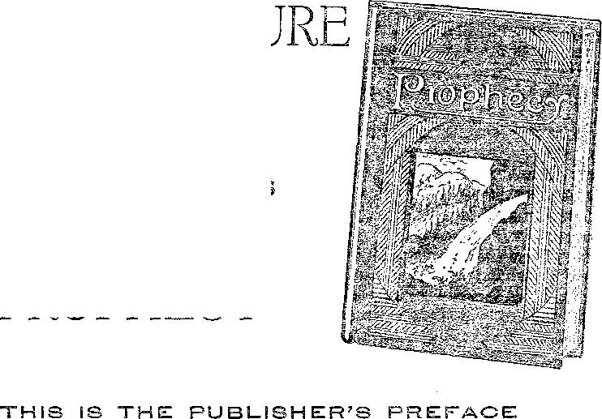

A JOURNAL OF FACT HOPE AND. COURAGE
in tn. x
“WATCHTOWER
FRAUDS .
FRUGIVOROUS MAN
VACCINATION IN ENGLAND
CONTROL OF THE AIR
THE CONTROVERSY
THE ARGUMENTS two radio lectures by Judge Rutherford
Bnmsmmm&mssmsamsimommmmsasmmsmgiBmmi
EVERY OTHER WEDNESDAY 5c a copy - $1.00 a year - Canada & Foreign $1.50
Volume XI <= No. 269 Jaiiuary 8, 193 0
Contents
««■ ■■■— ..— ---------y<g;^-—\.^\..'..r==sr=== j.=.-mzigssW
Social and Educational
"WATCHTOWER — WBBR” .............. 227
Some Ebatos—-Past and Present .......
Radio Instruction in Mexico .....
Freedom of Speech by Radio ............... 243
Finance—Commerce—Transportation
Lights on Traffic Policemen ..............
Political—Domestic and Foreign
Britain’s Conscientious Objectors
Wall Street’s October Panic . .
Science and Invention
Helps to Reading the Palimpsests
Home and Health
Vaccination and tub Law in England ...
Travel and Miscellany
China’s Pitiable Millions .........
Religion and Philosophy
Bible Questions and Answers ........
The Controversy .................. 245
The Arguments .................. 249
Robbing the Dairyman ................. 254
The Children’s Own Radio Story ............. 255
Published every other Wednesday at 117 Adams Street, Brooklyn, N. Y,, U. S. A., by WOODWORTH, KNORR & MARTIN
Copartners and Proprietors Address: 117 Adams Street, Brooklyn, N. Y., U. B. A.
CLAYTON J. WOODWORTH.. Editor ROBERT .1. MARTIN.. Business Manages NATHAN H. KNORR .. Secretary and Treasurer
Five Cents a Coer—$1.00 a Ybas Maks Remittances to THE GOLDEN AGE Notice to Subscribers: We do not, as a rule, send an acknowledgment of a renewal or a. new subscription. A renewal blank (carrying notice of expiration) is sent with the journal one month before the subscription expires. Change of address, when requested, may be expected to appear on address label within one month.
Foreign Offices
British ...a0B6,»,,i,34 Craven Terrace, London, W. 2, England
Canadian 40 Irwin Avenue, Toronto 5, Ontario, Canada
Australasian , , J Beresford Rd., Strathfleld, Sydney, N. S. W., Australia- '
South Africa ....... .....6 Leila Street, Caps Town, South Africa
Entered as second-class matter at Brooklyn, N. Y., under the Act of March 3, 1879<
Volume XI Brooklyn, N. Y., Wednesday, January 8, 1930 Number 269
u WATCHTOWER — W B B R ”
Brooklyn Has the World’s Most Beautiful Broadcasting Studio.
WHEN it comes to mere bigness, Chicago has the largest broadcasting studio, 75 feet by 51 feet; when it comes to the largest number of artists employed about a studio, New York has one with a staff of 700 persons; but when it comes to sheer loveliness, Brooklyn has a studio that has it all over either one of the two big cities with which it contends in point of population. And the Brooklyn studio is not so small either. The main broadcasting salon is 45 by 23 feet, with a ceiling 17, feet 6 inches above the floor.
This beautiful salon is merely one part of the Brooklyn city installation of the WATCHTOWER Network, broadcasting the Sunday morning lectures of Judge J. F. Rutherford on Bible topics, sent out over thirty-one stations scattered over the area between Maine, South Dakota, Kentucky and North Carolina. Occasionally the WATCHTOWER Network goes through to the Pacific Coast, and on three occasions Judge Rutherford has had the honor of the greatest radio hook-ups in history.
The ‘WATCHTOWER—WBBR” programs, 'daily except Saturday, also go out from this salon, which we shall now attempt to describe; but it is a hard job to depict loveliness. A gentleman familiar with several of the largest broadcasting studios said immediately on entering it, “Station ------[mentioning one of the
best known studios in New York], compared with this, is like a barn.'’ Another gentleman, who has been in all parts of the world, looked at the grand salon long and thoughtfully, and said: “The impression is ethereal. I can find no other word to adequately express it.”
The walls and ceilings of the salon are nile green, that is to say, they would be nile green if it were not for the beautiful panels of soft-toned variously tinted acoustical materials that were let into them. As it is, there are five
shades of color in each wall and on the ceiling, for the great beams around the top of the room and pilasters at each end are pure white.
Those pilasters are something to talk about. One in each corner of the room, of course, but three in each corner of that end of the room where the artists enter and leave. The grouping of these six pilasters last named gives an air of dignity and purity and beauty hard to be described.
Now try to imagine a ceiling supported by eight beautiful wfliite pilasters and carrying giant white ceiling beams around the edges. Next these beams is a narrow strip of the ceiling proper, done in nile green, but the whole vast interior portion of the ceiling is made up of a panel of acoustical material, some of the strips in golden yellow, others in light and dark ochre, all most artistically placed with respect to one another.
The side walls are, if anything, still more interesting. The illusion that they are of nile green is carried out throughout, but each end wall is broken by two panels of the acoustical materials in three colors above named, and each side wall is broken by four such panels. The whole is a dream.
Perhaps the first thing a visitor will note on coming into the studio is the chandeliers, of which there are eight. These chandeliers are strictly modernistic. The lights which they carry are soft and the chandeliers throw no shadows. Each chandelier is enclosed in a nine-pointed casket of cream-colored glass, swelling out in four offsets, in straight lines, with each line edged with black.
The black edges of the cream-colored chandeliers suggest a line of decoration which runs around the studio breast-high from the floor. Below that narrow black line the walls of the studio are of beige tint. The floor is of cork in 227
n* GOLDEN AGE
228 two colors, foot-square sections, with burnt sienna edges.
Furniture in the main broadcasting salon is of the practical sort for the purpose for which it is used. The piano is a Mason & Hamlin. The microphones and other accessories for the use of artists are the latest and best. There are no outside windows. Heating and ventilation are indirect and perfect. The air in the studio is changed completely every four and one-half minutes. A velour drape at one end offsets the beautiful stairway rising from the other end. There is an exit from one of the side walls, for the convenience of artists who reside in the building, 124 Columbia Heights.
At the stairway end of the main salon, raised some ten feet above its floor, there are, on the one side, the waiting room for artists, and, on the other, the smaller broadcasting salon, and the control room. The latter is so located that the operator can view both studios 'without leaving his seat. The transmitter is on Staten Island. The windows between the control room and the studios, and those between the studios and the artists’ waiting room, are double, and set in rubber.
The small studio, twenty feet long by fourteen feet wide, is for the use of speakers, duos, and trios. Like the main salon, it has specially prepared acoustical materials on ceiling and , walls, and a cork floor, above several thicknesses of felt and cork. Like the main salon, the trim of the hexagonal chandelier in this salon is carried out in the oak trim of the room. This room is equipped with loud-speaker and signs of contact when microphone is on.
The waiting room for artists, where they linger until time for them to go on the air, is a neatly furnished hall thirty-eight feet long by nine feet wide, the most interesting feature of which is a “Watch Tower” the light in which flashes intermittently to tell the artists that they are in the studio of that name. The walls of all these rooms are lined with sound-deadeners. All the ceilings are insulated, so that there is always a uniform temperature. This room has a beam ceiling. The room for telegraph operators of the WATCHTOWER Network is near by.
Convenient to the artists’ waiting room, and at one side of a hall six feet wide by twenty feet long, is a ladies’ rest room an interesting feature of which is an elegant black china drinking fountain of newest design. Elaborate toilet rooms are adjacent, finished in white enamel.
Connecting with the hall last named is a hall at right angles to it, twenty-five feet long. On one side of this hall, at one end, is a men’s lobby, with drinking fountain, and adjoining it a spacious, well-equipped toilet room, having two shower baths as one of the features of which artists may avail themselves if they come early enough. A neat little sign in this room says, “No smoking on the premises”; and means what it says.
At the other end of this hall, on the same side, is the radio manager’s room and program manager’s room, an apartment twelve feet wide by nineteen feet long. The floors of all these halls and rooms are laid with a particularly beauti- .......
ful pattern of inlaid linoleum which extends to them in an unbroken pattern from the artists’ reception, audition and practice room, adjacent to the main entrance to the building, on the opposite side of the hall last named. This room, nineteen feet wide by twenty-four feet long, is fitted with piano, settee and a half dozen pieces of fine furniture. The lighting arrangement is : of the same general pattern as in the main broadcasting salon. The brown trim of the chandeliers in this room furnishes the key to the scheme of its decoration. The velour drapes of the room are of old rose color. The light green stripe on the library table is found in all the furniture in this room, and on its wall. The wall is finished in stipple.
Stairways, where they occur, are of terrazzo, laid in cement. Suitable signs direct the artists where to go. The whole studio is a credit to ■ Brooklyn, to Greater New York, and to the country as a whole. No doubt it is one of the most beautiful conceptions ever carried out. WBBR is to be congratulated.
Lights on Traffic Policemen
THE traffic policemen of London, for their own protection, will hereafter wear electric lights, strapped to the small of the back. This is almost necessary in London on account of the dense fogs that at times prevail. These officers also wear white armlets.
Some Frauds—Past and Present
HE greatest of all frauds, and the father of them all, is the- same one that told the first lie, the Devil. His statement to mother Eve, "Ye shall not surely die,” has been proven false at every funeral from Eve’s time until now; and yet Satan has today in the earth far more people who believe his lie that the dead are not dead than there are persons willing to believe the Bible and every one of the five senses, all of which are in agreement that the dead are dead and remain so until the resurrection.
The next fraud was in the days of Enos when men first began to hypocritically call themselves by the name of the Lord, when the facts show that in reality they were servants of the Devil and should properly have called themselves by his name, as being their head, their father, their master.
Historically, then, we are obliged to give religious frauds the first place. A fraud is an act of deliberate deception practised with the object of securing something to the prejudice of another. One who practises such deception is also called a fraud.
When Satan lied to mother Eve he was seeking to estrange the human family from their Creator. It is impossible for God to lie; and Satan knows it, but he did not hesitate to insinuate falsehood against the pure and perfect Giver of every good and perfect gift, so that he himself might take the Creator’s place in the minds of his victims.
There is still a much greater market for Satan’s lie than for the truth. The truth that when men die they are dead, and. would be dead for ever unless God in His mercy should waken them from that sleep, is so repulsive to the natural man that neither reason nor Scripture have any Aveight with him. He prefers to believe what he has been taught, despite the fact that it is 'wholly without foundation.
The doctrines of purgatory and hell fire, with all their attendant miseries for the minds of millions now living in the earth, are merely restatements of the lie originally told to mother Eve. Every cent and every dollar that has ever been paid for masses for the dead is money that has been obtained by fraud. God is not in partnership with robbers of widows and orphans.
The Power-Trust Fraud
The Power Trust can not claim to be as "ancient and honorable” as the religious end of the world of frauds. In fact, its history of the last few years proves that it is neither ancient nor honorable. But in smallness of soul, and thoroughness and meanness and contemptibility, it has no equal.
There are none too helpless mentally for it to debauch, no family so poor that it does not aspire to rob them of at least a little. It is the special darling of the great banks, of the stock exchange, of the newspapers, of the colleges, and of the government. To the full extent of its ability it has subverted them all.
Why any intelligent stick-up man should remain at his dangerous work when there are millions to be had in the peculiar methods of "finance” of the Power Trust must ever be a mystery. It is far easier to rob millions than to rob individuals, and the results are sure and safe.
Every month, as regular as the calendar, the average family must pay around ten cents a kilowatt hour for electric current that costs less than fc a kilowatt hour. They must do it every month this year, every month next year, and every month as far as men can see into the future, and at least three quarters of it is sheer robbery, simon-pure fraud.
It is on this huge difference between costs and selling prices that the New York stock exchange and all the other stock exchanges are built up. It is on these profits that the great "bull” markets are built up, which are periodically dropped to the bottom of the elevator shaft to shake out the little fellows, so that all the profits may remain with the "great financiers”, who direct the component parts of the Trust.
It is no wonder that the common people, when they read about the billions which have been made by padding their bills for public utilities, and using their life insurance money to swing the market this way or that, are driven into a frenzy of buying or a frenzy of selling stocks, in the mistaken notion that somehow or other they will be able to get back a part of what they feel is properly their own.
The Sucker Lists
The rush of millions of buyers into the stock market when stocks are on the upward swing, and their subsequent cleaning out when the right time has arrived, has 'developed in New York a list of stock buyers that is locally known as ‘the sucker list’. Copies of the list command a high price.
Experience shows that the person who has once been bitten by the mania to obtain money in the stock market seldom recovers sanity. He comes again and, again into the market, and in seven years, so runs the estimate, he is well and permanently relieved of all his assets, and an-othei' crop is ready.
People work all their lives and accumulate money by hard work and put their money into stock schemes which they fondly hope will eventuate as do the schemes of the Power Trust. They are trying to imitate, but they do not have behind them the franchises and the financial backing, and the newspapers and politicians, that are necessary to win. The women are as foolish as the men.
A Dignified Bank Robbery
The efforts to obtain a certain crude kind of justice result in many minor frauds, often aimed at the largest banks in the big cities. One of the most peculiar cases of the kind was that of Charles D. Waggoner, president of a bank in Telluride, Colorado.
Mr. Waggoner claims that New York financiers ruined Telluride by buying three of the largest mines and closing them down, throwing most of the inhabitants of the town out of work. Through code telegrams, ostensibly signed by Denver banks, he obtained from New York institutions certified checks for half a million dollars, most of which he placed to the credit of his own bank. He claims that he did this so that Telluride people who had been, unfairly treated by the New York financiers might get their money back, and that he is perfectly satisfied to take the prison term he is sure to get.
Two men named "Weller lived for about ten years in New York, making their living by means of checks which they had printed on nonexistent banks, and which they falsely certified. They deposited these checks here and there over the country and drew against them quickly, thus stealing, it is estimated, about $150,000. They got ten years in prison, which was right.
The great banks are supposed to know how to take care of themselves, and they do know it pretty well; yet on one occasion the Bank of England parted with $500,000 for forged bills
of exchange, and forged letters of credit have induced European banks to part with more than ; that amount within the past two years. L
New York police a year ago picked up a dignified, charming lady dressed in black who managed to collect $50 to $75 in cash from many of the most important stores in New York -city. She did it by ordering valuable merchan- ; dise sent to a prominent hotel. Then she gave a i check for $50 or $75 more than the amount of the merchandise and received her change. She made $15,000 in this way before she finally was r... caught. Needless to say she drew worthless i checks and did not live at the hotel named. The purchase of the goods was what deceived the storekeepers. The goods always came back all ; right, but they were out their change. ....
A Few Political Frauds
A complete history of political frauds would ■ be the most complete history of mankind that has ever been written; and the people no quick- : er get deceived once than they are ready to fall down and do homage to another who promises them the same things, and give him the votes . that enable him to put his various deals into action.
Recently the world has been treated to the ; sordid spectacle of a United States senator ; from Connecticut having in his employ, and paid by the United States government, a man who at the same time was in the employ and on : the payroll of a manufacturers’ association in his home state. When advice was wanted as to ■ how to write a new tariff law, this man was ready to tell the American people just what to ■..
do. And as soon as he got any inside infonna- L
tion he was equally ready to tip his Connecticut employers off, so that they could formulate new j demands. It worked fine, like the colored man’s : coon trap. And the most shameless part of the , whole matter is that fellow senators of the man from Connecticut, some of them, publicly defended his course, saw nothing wrong with it, -
It seems that in China when a man can not be persuaded to go straight they make a soldier--------
out of him, and thereafter he can do all his.......-
deeds of banditry in uniform. Something like : this system is in process of development in : America. A year ago, in Philadelphia, it looked. for a time as if the preliminary installation exercises had been held.
A police captain and twenty-three of his subordinates were arrested at one time. The trail of graft, extortion, bribery, bootlegging and racketeering ran all over the city and down to Washington, whence issm the permits to manufacture the “perfumery” kept in decanters on the sideboards of Philadelphia’s most exclusive homes. In Philadelphia, at that time, it was considered better etiquette to have a policeman for a bootlegger than to have an ordinary citizen.
Minor Political Swindles
In the vicinity of New York the political boss of a district is its patron saint. Picnics among the supporters of a candidate are common. In Jersey City, rascals, during the 1928 campaign for president, sold Eepublican outing tickets at $2 apiece, and Democratic tickets at $2.50, to hundreds of persons. In the one case the outings were to be at Lake Hopatcong, and in the other at Keansburg, N. J. The only thing certain is that many men, poor laborers too, dressed in their best clothing and gathered at _ the appointed rendezvous at the time set, but found no one ■waiting to take them to the places to which they had paid to go.
New Jersey must be rich, when it can afford to pay $18 apiece for serving papers; yet that is what the taxpayers of Hudson county have had to pay in salaries to get the w’ork done. One man found his work for one of the city governments in that county did not interfere with his hiring out to work for a newspaper during the same hours. One man was paid $1,700 a year for the onerous task of gathering up, for a distance of two blocks, the crates of vegetables jolted from trucks in passing!
The graft in New York is the despair of Boston, Philadelphia and Chicago, and the wonder of the world. On its Jamaica sewer system the city was forced to pay from four to eight times the market value of the sewei’ pipe used, the graft alone running to at least $8,000,000.
In the street cleaning department of the Bronx alone seven hundred names of men carried on the payrolls were of those who had been ________employed for brief periods as emergency men __ .....and thereafter were carried for periods of
which they had no knowledge, or "were those of : men who had never at any time worked in the ’ department, or were names of men who never “"’existed anywhere at any time but somehow managed to be on hand on pay day.
One of the meanest and smallest forms of graft has been in connection with the demanding of licenses from pushcart and other street peddlers. Up to $500 graft has been levied on preferred locations. Peddlers have made applications for licenses and waited for months for their permits in vain, while those who paid the necessary graft obtained licenses readily.
The Racketeering Industry
The racketeering industry is nothing more nor less than a revival of tribute-taking, and no industry is exempt. This particular addition to our twentieth century civilization came from Chicago, but its machine-gun division was evidently trained for service during the World War.
A canvasser for the “protection association” comes along with a suggestion that for a stipulated sum, perhaps $1,000, the business will be “protected” from racketeers for a year. If the money is paid, the protection is provided. If it is withheld, things happen quickly.
Almost anything may happen. Trucks full of goods disappear: the goods are stolen and the trucks destroyed. The owner of a laundry will find that his place has been entered and acid sprayed on his clothes. The poultry trust division is estimated to have had an income of $600,000 a year. Independent merchants were driven out of business.
In the Bronx, in September, 1929, one hundred and twenty policemen -were on guard day and night over unfinished apartment houses where racketeers had destroyed about $3,000,000 vzorth of new property because the builders 'did not promptly pay their “dues”. All this makes it harder for the honest citizen, because he must in one way or another repay the builders.
Ta the Bronx it was found that some builders had paid as much as $25,000 in graft to the racketeers. If they did not pay, their men were called off the job, and in some instances the ’buildings were burned. In three months eleven such fires caused damage running into the millions.
The racketeer gangs, of which it is estimated that at least 250 are operating in New York, reach down to the wage earner. Workers are terrorized into each giving up a small amount. Witnesses dare not testify, for fear of reprisals. The other day a poor motorman was overheard bitterly reproaching a large, prosperous-looking, well-dressed citizen for “shaking me down”, as the motorman put it.
Referring to police connivance in the industry, the New York Times says: “When crooks and criminals see that the very officials entrusted with the enforcement and administration of the law are themselves racketeering, it is not surprising that they become bold and organize and operate on a wholesale scale.”
Fraudulent Use of the Mails
Uncle Sam has at all times thousands of boarders who have been tried and convicted for misuse of the mails, and thousands more who are equally guilty, but clever enough to escape being caught. In New York, in a single month, over a hundred cases of fraud were prosecuted, thirty-six for misuse of the mails, and sixty-five for fraudulent bankruptcy.
The schemes devised to collect money through the mails without rendering any service in return are simply legion. All kinds of glittering promises are made. Possibly employment is offered. A substantial payment is made for “samples” or materials or what not, and the collector is that much ahead. No honest attempt to fulfil promises is made.
In New York city a brilliant student of human nature, William Goldsmith, reflected that the bereaved are always sensitive about contracts made by their loved ones who have passed away. He picked out the names and addresses from obituary columns, sent the family a clock which cost $2.20, and with it a bill for $7.50. He did a nice business, but finally stubbed his toe w’hen he sent a clock to the family of a man who had been in a hospital for six months and unable to speak.
In 1927, in New York, a dignified swindler was locked up who was a walking post office on his own account. By filling in stolen money orders, canceling stamps on letters, etc., he managed to collect about $1,400 from the best hotels in New York city, until he cashed one order too many.
Every now and then some simple-minded but crooked-hearted individual gets the brilliant idea of using the United States mails as a basis of collecting a ransom from somebody. In Hazleton, Pa., on one occasion, one such man even rented a post office box and demanded that the money be sent to that box. The rest was easy! When he went for his mail he was taken in and made one of the family.
Insurance and Transportation Frauds
When the ferryboat Peralta made her nose dive in San Francisco Bay, which drowned five passengers, a Mrs. Huffman reported her daughter missing and sued the ferry company for $50,000. She did not know that insurance companies have big books filled with case after case where survivors have tried to collect insurance under similar instances. It was a great disappointment to her when detectives found her daughter, working in a strange locality, under an assumed name, and proved that mother and daughter were in collusion. They went to prison together, as a result.
There used to be a great deal of fraud practised upon railway companies, mostly by dishonest conductors, who, for a small sum, would carry their friends considerable distances; but the heavy penalties now imposed, as to fines and imprisonment, have probably stopped most of that.
Charges for excess baggage have often been collected in bygone years and the money retained by the one who collected it. France is just wrestling with this problem, having discovered that baggagemen have been falsifying weights and splitting the profits with passengers who have large quantities of baggage.
The toll bridge is essentially a fraud in this day. One such bridge made 185 percent on its cost in a single year. Every passenger over the New York Central Lines between Albany and New York pays a small sum to the Vanderbilt family, a sum which mounts prodigiously with the years.
Religious and Publication Frauds
No field of fraud is more systematically and persistently plowed, sown, cultivated and reaped than the religious one. The purgatory swindle alone has garnered billions. The humble collection box has extorted willing and unwilling contributions that have accomplished no heavenly or earthly end except to keep the shakers thereof in food and raiment.
The South is grieving over the fact that one of the wealthiest men in Atlanta, treasurer of the home mission board of the Southern Baptist Convention, helped himself to over $1,000,000 of the funds in his care, representing the lifetime donations of many members of his denomination. Brother Carnes got pinched in the stock market.
Arkansas has recently been visited by-some well-dressed religious men who have persuaded the people to part with $10 to $17.75 for a Bible which was to cost $25; a very fine Bible indeed, which probably cost about $7 to make, possibly much less. The sad part is that the religious men got the advanced payments all right but neglected to send in the money to the publishers. As a consequence the buyers got nothing but the experience.
Every community has been blessed by the crowd of canvassers that come in and get pictures of all the great and near-great men of the town and county. These are published in the book at $10 per, plus a copy of the book for another nice sum, a tribute to vanity. Two men who used to be in this business were recently arrested in New York for trying to get $185 out of an architect. They posed as biographical writers for newspapers in London and Paris. They had to go back to jail.
Among the most amusing frauds of recent years was that practised by the French farm laborer, sole author and patentee of the Glozel ■'finds’, which set the whole so-called scientific world by the ears. He made them all look foolish. Their proofs of evolution turned out to be the work of an uneducated man with a little knowledge picked up at museums, and a nail.
Social Frauds
There is nothing that some people will not do to break into ‘sassiety’. And when they get in, for the most part, they find that there is nothing there; nothing but a mad scramble to see who shall make the biggest splurge, not infrequently winding up with a scandal.
'Princess Bizzimo’ had all Berlin at her feet. Elegantly dressed and perfumed she lived for several weeks at one of the best hotels, all on her dazzling smile. Then she left and went to another hotel, without paying her bill or leaving any baggage worth while. At the second hotel she succeeded in getting a check cashed with which she paid her first hotel bill, and was getting along pretty well until finally she had too many checks out and somebody reported her to the police. She even had the judge won over, until finally a detective happened to remember that he had seen her before; and that was the end of her Berlin triumph.
A young soldier, back from Panama on a vacation, nearly got himself into a permanent home in New Jersey by posing as the kidnaped son of a woman living in the community. Her son had disappeared when he was six years of age, and the young man of seventeen wanted a home. Unfortunately for him, his stories did not hang together and he had to go back to the army. He admitted that he had lied in order to get a home.
When Lindbergh flew from New York to Paris, a bright young New York man made himself up into a committee, got some letterheads printed, and sent out 1,500 invitations to a banquet in Lindbergh’s honor, $10 a plate. He gathered in $7,600 just before Lindbergh returned, and went off somewhere to have a good time with the $7,600. There was no banquet, at least not of his providing.
Real Estate Booms
No one can ever say with certainty that a real estate boom is a fraud. Some of the most valuable real estate in the world was first sold when it was under water and looked as if it was worth nothing. Dredges and piling made from it beautiful water fronts, a delight to the eye.
Yet occasionally there is something that comes so near being barefaced robbery that it is hard to call it by any other name. Lands have been sold for irrigation in the vicinity of Boulder Dam which lay higher than the waters will reach. A man who knows how to read maps noticed that tracts were being sold marked fEl. 1200’, meaning elevation 1,200 feet, and asked the salesman what it meant. Back came the reply instantly, intended to cut off further inquiry, “It means electricity 1,200 volts,” a most ingenious lie.
A fertile source of revenue is the nursing of real estate claims to estates of persons who died a hundred or more years ago. In the meantime the farms or other properties which they once owned have been sold and resold and covered with buildings, and the heirs of the original owners stand about as much chance of getting anything back as do the North American Indians of regaining their happy hunting grounds.
The Employment Agency Swindle
The most cruel and heartless of all swindles is that of the private employment agency which operates along dishonest lines. There have been and perhaps still are agencies 'that work in collusion with head waiters whereby the worker is discharged soon after earning enough to pay his employment agency fee. The fee is split between the agency and the head waiter, and the more new employees there are, the more money to divide. If anybody can think of a more diabolical swindle than this, name it.
One agency manager obtained the power of attorney from unsuspecting workers, collected $150,000 from their employers, and never turned the money over to those who had earned it. When some of these poor men and women tried to collect their wages they were beaten and thrown out penniless after working an entire season, in summer hotels.
Some agencies make a practice of sending a 'dozen applicants to one job. When the unsuccessful applicants return and demand their money back they are thrown out. One building superintendent, in collusion with an employment agency, was in the custom of discharging one-third of his force every day and then hiring others through the same agency.
The Alice Foote MacDougall Coffee Shops, very aristocratic, were in the limelight a year ago for requiring their waitresses to pay $10 a week for their jobs, expecting them to make their wages out of the tips they received and pay the concern $10 besides.
The Confidence Man
The confidence man is a student of philosophy who is using his talents in the wrong direction. New York had one such man, a well-to-do cotton broker, who did not do it because he needed the money, but took his recreation defrauding attorneys, banks, and hotels. He dressed well, talked well, and did it just because he liked to try his skill. He finally did it once too often, and got caught.
Confidence men make a specialty of luring poor widows into parting with their life insurance money or other property. What a miserable way to obtain an existence, preying upon the weakness and inexperience of others! It is like taking money for masses for the repose of the soul.
A confidence man in New York offered to sell a woman a small box containing $7,000 of the late Czar’s diamonds for $1,800. She-went to the bank and gave him $1,000, all she had, only to find that she had purchased a quantity of highly polished pieces of plate glass.
The offer of stupendous profits has misled millions of people. The Ponzi case in Boston was one example. There was recently another one in Iowa, and in Wisconsin. It paid 26% dividends regularly to those who wished them. Thousands of preachers, farmers, merchants and clerks put in their last dollar. Finally the bubble burst and the entire crowd was broke flat. New York had a similar experience a year ago with a French financial paper. It left mourners to the extent of $3,910,000.
The Two-Man Confidence Game
The two-man confidence game is a great improvement (?) on the one-man game. We cite three instances. The first was in Birmingham, ’Ala. Two men accidentally met a real estate broker on the street. They talked of a business deal and agreed to meet in the afternoon at a hotel to discuss it further. The broker tells what happened. He says: 'We talked business and finally the two men bet me $100 I could not raise $5,000 in several minutes. I went down to the bank to prove it to them. I got the money and was back in the room in less than ten minutes. Well! You win,’ said one of the men. 'Now you ought to buy the cigars.’ 'Sure, I’ll buy a whole box,’ said I, jumped up, left the $5,000 on the table and ran for the smokes. When I got back my two friends were gone, and so was my $5,000.”
A man claiming to be ill entered the shop of a hard-working New York shoemaker, stating that he had just arrived from Detroit. He asked the shoemaker to keep $15,000 for him for a short time, all the while complaining of his pains. As they were talking a second man entered the shop and offered to share some of the responsibility, saying he would post $3,000 as a guaranty of his own honesty if the shoemaker would also give a guaranty. The latter went to the bank and drew $1,000, all he had, and turned it over to the first man, along with the $3,000 already given him by the second man. The pains of the first man got worse and he asked the shoemaker to run across the street to a drug store and get some medicine for him. When he got back both the men and all the money were gone.
A somewhat similar two-man job was done at
Coney Island two years ago.'A stranger strolled up to an Italian plasterer and told him of his desire to go to Italy and secure the vast fortune which was awaiting him there for an invention which he described. While they were talking a second stranger came up, pulled out a roll of bills with a $5,000 bill on the outside and offered to pay the first man’s passage to Europe. The suggestion was then made that the plasterer get in on the invention, which he did by drawing all his money from the bank and putting it in the inventor’s hands. The inventor suddenly became ill. The man with the $5,000 bill hurried away for aspirin. When he came back the sick inventor accused him of trying to poison him. The plasterer was then induced to go to a drug store for more aspirin, which he did, with the usual results. The two men and all the money were missing.
It seems as though we are now living at a time of less real honesty than at any other time in earth’s history. Thank God Messiah’s kingdom will put an end to all this. Justice shall be laid to the line and righteousness to the plummet, and it shall come to pass that every soul that will not obey earth’s new ruler, with his whole heart, mind, soul and strength, shall be destroyed from among the people.
A Lift of the Lid
Radio Instruction in Mexico
THE Department of Public Education in
Mexico is now radiocasting instructions to teachers in five Mexican states. Rural teachers are thus given guidance in their vocations without the necessity of leaving home.
And Now the Robot Aviator
NEW German invention automatically stabilizes an airplane while in flight, enabling the pilot to give his attention to other matters.
The automatic control is intended to take the strain off the pilot’s nerves and give him more time to devote to the art of navigation.
Courtesy to an Earthquake
IT IS said that nothing is more unsettling to the human mind and nervous system than an earthquake shock. When Massachusetts had a quite heavy shock recently a group of the highly trained students of Massachusetts Institute of Technology involuntarily rose to their feet, the first step in flight.
Mean Chan Chun Hung
WHEN Chan Chun Hung, of Amherstburg, Ontario, was found with four bottles of whisky in his room and was brought into court to explain how he came to have it, and when he was asked if he was a Christian, he was mean enough to say, ‘No, I am a Presbyterian.’ This is rather a severe rebuke to the gentleman who burned Servetus at the stake.
Radio in South Dakota Schools
WITHIN the next two years radio receiving sets will be installed in each of South Dakota’s 5,000 public schools, and a comprehensive plan of semi-weekly broadcasts of an educational nature will be inaugurated.
Pulverized Fuel on the Ocean
THE United States Shipping Board steamer
West Alsek is the first vessel to cross the Atlantic ocean on pulverized fuel. The tests thus far made show increase of speed of 9 percent and a saving in fuel as high as 15 percent, and indicate a wider use of this fuel.
Bahamas in Distress
HE summer hurricane of 1929 about finished the Bahamas. A dispatch from Nassau states that some of the islanders on the out islands are starving, and. the schools have been closed, because the people are too poor to maintain them. No hope is seen except in direct help from the government itself.
November 12 at Princeton
OVEMBER 12 at Princeton hundreds of students of the University hurled rocks at each other, damaged the car of the governor of the state, tore down street signs, broke electric lamps, stopped automobiles, and altogether caused property damage estimated at $5,000. Princeton University is a place famoiis for training missionaries for heathen lands.
Britain’s Conscientious Objectors
OF BRITAIN’S 16,000 conscientious objectors during the World War, 6,261 were sent to prison, and nine hundred were kept there for two years or more. Ten of them died in prison, heroes of the better day. The Kellogg Pact says that war is a crime, and so it is, and it was as much so in 1918' as it is now.
Salads Popular in Britain
IN THE last few years the importations of fruit into Britain have increased to a point where they are now more than double what they were only recently. At the same time the importations of meat have fallen off until they are only about two-thirds what they were. The British people are evidently eating less meat and more salads.
Helps to Reading the Palimpsests
A PALIMPSEST manuscript is one which has been used twice, the original writing having been wholly or partly removed to make room for a later writing. A Viennese scientist has now invented a method of photography which brings the original writing clearly to view while screening out the later writings. This will be a tremendous aid to scholars in deciphering ancient documents.
Teletype in Los Angeles
IN LOS ANGELES the teletype system which has just been installed enables the sheriff and the head of the motor patrol to keep in touch all day with each of the sixty-one motorcycle officers engaged in patrolling the county roads. Previously they were out of contact from the time they left the office in the morning until they reported back at night. A girl operates the teletype.
Christianity and War
Rev. T. Rhondda Williams, president of the
Congregational Union of England, says: “It is impossible to pray for success in war in a Christian way. To pray for victory means asking God to bless our use of poison gas, and boiling oil, and incendiary bombs, and treachery, and lying, and bayonets. There can not be a just war. The war that is fought for the finest cause is in itself atrociously unjust. Any country that would ask its citizens to support it by such deviltry ought to be destroyed.”
Chile’s New Penal Code
UNDER Chile’s new penal code the death penalty for murder is done away with, and after twenty years in prison a person adjudged guilty of murder may be released provided he has unqualifiedly proved his right to live once more among his fellow men of the outside world.
Prison Sentences Too Severe
THE National Society of Penal Information, seeking the explanation of the numerous prison riots, attributes them to too great severity, to overcrowding, and to inadequate food and inadequate opportunities for employment. Prison sentences have been made too long, and opportunity to obtain parole has been too limited. These, in effect, are some of the findings.
Has Cuba a Reign of Terror?
Octavio Seigle, a Cuban refugee in Washington, claims that since 1925 there has been neither free speech nor free press in Cuba, that at least 118 union labor men have been assassinated because of their organization activities, and that two of these, Claudio Bruson and another named Yabob, were at first imprisoned in Morro Castle and subsequently tossed out to the sharks.
Photographing the Mississippi
THE Mississippi River is in process of being photographed. In the past ninety days an area larger than the state of Massachusetts has been photographed from airplanes flying back and forth between Cairo and Memphis, and now a like area south of Memphis will also be photographed. These maps are being studied critically to enable the engineers to decide on the best methods of future flood prevention.
A Wonderful Swiss Mother
WrHEN a young Swiss, one of twenty-two who had refused to undertake military service, was brought into the Geneva district court to be sentenced to prison, his mother stood up in court and said: “I rejoice in the.....
action of my son. His crime gives me the greatest possible satisfaction as a mother. It is I who led him astray. I brought him up in love for and trust in God. Today my hope is fulfilled. It is I who should be judged by you, not my son.
I am the guilty one, his mother.”
Shell-Shocked Veterans
Paul V. McNutt, former national commander of the American Legion, asserts that over 52,000 World War veterans are now receiving compensation for having their nerves shattered and that the peak of the psychiatric load will not be reached until 1947. Meantime 20,378 of the above are in such condition that they have had to be placed in hospitals. Over a third of these were placed in state, county, city and private institutions.
The British Soldier’s New World
Lloyd George assured mankind that when the World War was over the British soldiers should have a new world, etc., etc. One of them just appeared in a police court in Birmingham to ask mercy for his wife for attempting suicide. He said by way of extenuation that for fifteen years he and his wife and three children have been eating and sleeping in one room and that his wife was worried because they had been given notice to leave and could not find a house. If this is his new world, what could the old one have been like ?
Cause of the Stock Crash
A STUDENT of stock crashes states that it came about as follows: The public bought one billion dollars of investment trust stock in August. The investment trust companies loaned it to brokers. When the stocks had reached the bottom the investment trusts took their pay in stocks bought at a fraction of their previous price. The expert says simply, “A substantial part of the floating’ supply of stocks now has been transferred from the hands of weak amateur speculators to those of strong professionals.” The public got it in the neck.
Wall Street’s October Panic ■
HpHE total market value of all the stocks listed on the New York Stock Exchange on October 1 was $87,073,630,423. The total decline in the value of these stocks during the month of October is estimated at very close to $50,000,000,000. Thus more than half the paper values were wiped out in a single month. We have reached the days when "fear is on every side” and nobody has much confidence in anything or anybody. On the edge of winter all the lambs have been sheared down to the hide, and it will take some time to entice them back for another cutting.
The Liberty Bridge
THE Liberty Bridge, proposed to be built J- across the Narrows leading into New York harbor, will have towers 800 feet high, a clear span of 4,500 feet, and a clear height of 235 feet above high water. The main cables will be 48 inches in diameter, each containing 48,000 wires. The cost will be $60,000,000. This bridge will have a span 1,000 feet greater than the Hudson River Bridge, now building, which bridge, in its turn, is twice the span of any other.
Townless Highways Coming
HHHE highways of the future will be townless -®- highways, connecting the great cities of the country by routes which will be as direct and. scenic as possible and which will make a positive effort to dodge all the big and little towns enroute. Every one wants that kind of roads. The automobiles want them because they can make better time and with less danger, and the towns have found that through automobile traffic does nothing for a town except reduce property values and make living less safe and pleasant.
All Fabrics Made Fireproof
A LIVERPOOL inventor has evolved a chemical process by means of which every material in a home, whether made of canvass, cotton, wood, silk, or w’hat not, can be rendered at once fireproof, waterproof, acidproof and heatproof, all at a cost that is practically negligible. Articles thus treated do not burn even when held in a blow-pipe flame or when drenched with gasoline. Looks as if the fire insurance companies will be out of business soon if all this is true. The inventor is a young man named Hood, and is but twenty-four years of age.
A Rental of Air Rights
LOWER New York is now so solidly built up with skyscrapers that the owners of the new Harriman Building are paying a neighbor $22,500 a year for a period of thirty-three years for not running his building up any higher than the fifth floor, to which it now extends. This gives the Harriman Building light and air on thirty-three floors which might otherwise be dark. A movement is under way to secure lower taxes for the little buildings that are now perpetually in the shadows, since the skyscrapers are monopolizing so much of the light and air about them.
AS A1 law-abiding Israelite our Lord Jesus doubtless ate of the. paschal lamb at least once a year during each of the thirty-three years of His human life, and if He ate it thirty-three times there is a fair presumption that He ate it several more than thirty-three times. People who could afford to enjoy roast lamb once a year could probably get it oftener. He also ate broiled fish, and selected fishermen as His disciples.
The heavenly Father went to the trouble of giving the Jews a list of flesh foods which they might eat. When He fed Elijah in the wilderness a part of Elijah’s diet was flesh. The Jewish priests were given roast beef as part of their priestly compensation. In our Lord’s prehuman estate He ate roast veal for Abraham. The apostle tells us that brute beasts are created to be destroyed.
The foregoing evidence is convincing that it is all right for man to eat meat, or at least has been all right up to the present time; and most of us still do so, yet there are some very excellent and very intelligent people in the world, and Bible Students too, and readers and subscribers for The Golden Age, who think that the time will come when man will return to his diet in the garden of Eden, fruits, and maybe they are right.
Anyway, whether they are right or not, they have to be heard. Out of a number of replies to a recent article on “Man the Omnivorous” we select some paragraphs from the pen of Dr. W. G. Wright (Michigan) which we are sure will be read with interest. We can not publish all that Dr. Wright has written, for we are publishing a magazine, not starting a war. The doctor writes wittiiy ly, caustically, and somewhat savagely. No doubt he may have had a steak for dinner when he wrote the following:
In the first place man is not the genus Homo, but only a part thereof because the genus also includes the anthropoid apes, also non-earnivorous by nature. It is very true that degenerate man is omnivorous. He eats birds’ nests and snails. His omnivorous propensities he generously shares with the hog, the chicken, and the hyena. He is undoubtedly the most rapacious, cruel, and ferocious creature that crawls on the face of the earth, as was clearly shown in an article that appeared in The Golden Age under the caption “The Sons of Japheth”.
The Bible is not a guide to diet, nor was it ever intended as such. People who look upon the Bible as
238
the last word in dietetics would probably feed athletes on beans, multitudes on fish and bread, and recommend for exercise a little walk “on the water”. They would give wine for gastro-intestinal disorders, and when they were on a picnic “out in the wilderness” would likely eat honey and locusts.
The dietetic restrictions and advice given in the Mosaic law to the JEWS ONLY do not apply, for a great many good and sufficient reasons, to present-day man. It is a fact, well authenticated, that Jews who live on the Kosher diet are more subject to diabetes than any other people on earth, and that non-orthodox Jews who occasionally eat pork are far less subject to this very serious malady.
I realize that this does not PROVE much one way or the other, but I merely mention it to show that even those who live according to the law of Moses in this age encounter some very serious troubles that can be greatly ameliorated by corrective diet.
I myself do not pretend or try to be a vegetarian even in the broad sense of the word, but I fully realize that, with a few, very few exceptions, the lacto-vege-tarian diet is a sine qua non for the sick man. Whatever one may think of this as a continuous mode of living, no up-to-date physician of ANY school will deny the value of the lacto-vegetarian diet as the diet of choice for the sick. ......... ■
C. J. W., Jr., says that many of his letters in reply to his former article came from “tender-hearted' souls” who could not stand the thought of the shambles in “the golden age”. Well, if there were more of these same tender-hearted people in the world this would be a happier and for that matter a healthier world. In order to discuss diet intelligently, a knowledge of organic chemistry and physiology is prerequisite. And this is just what some of these self-constituted authorities, “professors,” etc., do not possess. Animals slaughtered in abattoirs are often most cruelly killed, according to eyewitnesses. Sheep are stabbed, and then scalped while still alive. Butchers, on account of the bloody calling they pursue, are not permitted to act as jurymen in some parts of the world. -
But the piece de resistance of the whole article is the quotation from the words of Paul. The apostle was speaking of those who fell away from the faith, gave heed to seducing spirits, spoke lies, forbade others to marry and others to eat meat. Now if this doesn’t certainly apply to religious sects that have fallen away from the simplicity of the primitive church, encouraged and taught the hypothetical celibacy of the clergy class and instituted Lent and other fast days when people eat fish instead of other meats, and not to doctors who prescribe and advocate sensible diets for sick people—well, it is so plain and obvious that this does apply to these apostate church
gyStems> an(j not |0 physicians, that there is simply no argument.
And as for “total vegetarianism”, no one ever did advocate that, or at least if it ever was proposed it was by some insignificant cult that died of its own inanition. The term “vegeterianism” is really a misnomer, because nobody tries to live exclusively on vegetables. The rational biologic diet includes, not only vegtables, but dairy products, cereals, fruits, and nuts as well. Even the most enthusiastic writers on the mixed diet will agree that a high standard of health can be maintained on the so-called lacto-vege-_ tarian diet.
C. J. W., Jr., craves BIBLICAL proof that man will some day revert to his original diet. He also wants proof that man will cease to use milk, cream, cheese, eggs and leather. These latter come under the head of dairy products and will in all probability be 2 used throughout the millennium; leather, of course, being excepted, because men do not ordinarily eat leather except when they are shipwrecked or are fooled by restaurateurs who palm off leather under the guise of beefsteak.
The record in Genesis is very clear on the point that man in his Edenic home was frugivorous, and __ _ not till after the flood did he receive permission to __ slay the animals for food. This point, if thoroughly ” .....gone into, would require more space than an article
of this kind would permit. However, we, according to His Word, are looking for TIMES OF RESTITUTION, when the great Captain will restore “that which was lost”. What more proof is required?
Furthermore, not only will savage, omnivorous man return to his original diet, but carnivorous animals will also become frugivorous. “The lion shall eat straw like the ox.” When man -was given the privilege of eating animals the animals were also given the privilege of eating men. (Gen. 9:5) Wouldn’t that be nice too in “the golden age”? You eat beefsteaks and then some dear little lion comes along and chews a meal off you.
We pour oil on the troubled waters at this point by remarking that the reference to leather in the article in question was evidently designed to suggest to vegetarians that they look at their shoes before they get too enthusiastic about the abolition of abattoirs. No doubt the Lord Himself wore leather sandals.
L. D. Barnes (Oklahoma) writes that he expects that with the perfect conditions now approaching there will be such changes as will result in the destruction of pests, "their breeding conditions abolished, and that other animals might become extinct, as the Diplodocus, Stegosaurus, and so on, ceased to exist after the flood. He continues!
While father Adam was given dominion over fish, fowl, and animal life, and Noah was given beast and creeping thing for food, yet these might serve their purpose, and be folded away with the ages that gave them birth and necessity. The restrictions placed on the Jews as to clean and unclean animals might be a hint in that direction. If all things are to be made new, a continuation of the butcher business would surely get old, as it is now to many, in the ages of perfection and beauty to come.
Like C. J. W., Jr.,. I believe it is unsafe to follow any man’s fad or theory. If one is sick with a complication of symptoms, he may shorten his life by so doing. If T.B. is there, but dormant, to avoid the use of proteins may release the great plague that is most certain to end in much suffering and death. “What therefore God hath joined together, let not man put asunder,” said of the marriage union, may be said also of man and his age-ordained food. When the time comes, the great Giver of all good will make the change: when the old has served its purpose, the new will follow.
In my small opinion, eternal life on earth for man will not in any way depend upon the flesh of dead animals, but upon the whole-hearted devotion to the Life-giver. Thickly populated by the resurrected millions, there would be little room left for the vast herds and flocks that would be required to supply them with meat. There would be no room for them, it seems, ‘under the vine and fig tree,’ and no pleasure in keeping them there.
Apparently, Mrs. J. B. Johnson (Nebraska) has found that she gets along better without meat than with it, for she says:
Where would be the spirit of a sound mind for me to eat meat if it made me sick? When any one has proven that a food (meat or anything else) does not agree with him, surely if he has any brains he would let it alone. Many people can chew and smoke that weed called “tobacco” and get by with it, because their eliminating organs are able to throw it off; but let one try the poison whose eliminating organs are not in good condition, and see how quickly his heart fails.
Don F. White (Indiana) writes plainly and convincingly:
The Bible makes it pretty plain that perfect man was strictly a fruitarian. I am afraid that the odors that come from many modern kitchens would be extremely obnoxious to the nostrils of Adam and Eve in the garden of Eden. When we look over all the concoctions on the market today, in the way of foods, we do not find it so hard to understand why there are so many prosperous doctors and undertakers.
The Bible shows that after Adam was driven from Eden he was told to eat grains and herbs of the field (vegetables)', in addition, no doubt, to the fruits he was used to eating. The Bible also shows that it was not until after the Deluge, with man well started on the down grade, that the flesh of dead animals was used for human food.
The Bible says that the whole earth is to become like the garden of Eden, and that man is to be restored to all that was lost by the sin of Adam. It is safe to assume that when that blessed day does come (and we believe it will), ham and eggs and the pie that mother used to make will not be so popular as they are today.
Vaccination and the Law in England By F. R. Freer (England)
TN THE GOLDEN AGE of July 24, page 692, J- in the article, “An Unbelievably Mean Piece of Propaganda,” the statement occurs, “Vaccination is illegal in Leicester, England.”
Now, while Leicester is world-famed for its great fight against compulsory vaccination, the statement as it stands is not correct. Leicester is under the same law as the rest of the country.
It -was a coincidence that I should read this reference to Leicester, where I reside, at the time that our local papers were announcing the death, at the advanced age of 81, of Mr. J. T. Biggs, who was the city’s foremost antagonist to the Vaccination Act. You will see from the enclosed obituary notice that he was the prime instigator of the movement which resulted in the formation of a Royal Commission on the Vaccination Act. When he was called before the commissioners Mr. Biggs answered no fewer than three thousand questions. He afterwards published the story in his book, “Leicester Sanitation vs. Smallpox.”
It was its experience of the great smallpox epidemic of 1872, -when vaccination did not save the town from a severe outbreak of that disease, and when 346 deaths from smallpox occurred in the one year, which determined a number of Leicester citizens to oppose the vaccination system. A bitter fight ensued between the people and the authorities, which ended in the victory of the people, and this was celebrated in 1885 by a gigantic demonstration at which delegates from all parts of the country were present. A procession a mile long, carrying all manner of striking banners, paraded the streets, the Vaccination Acts were publicly burned and the attendance at the public meeting was the largest known in the history of the town. The demonstration reacted on the other towns, and the movement against vaccination received a great impetus. Some of the most respected men in Leicester were identified with the anti-vaccination movement, and they set an example to men occupying similar positions in other districts.
Briefly, the history of legislation on vaccination in this country is as follows:
Vaccination was made compulsory in 1853, and under the Act every English parent became liable to a fine of twenty shillings and costs if he refused to have his child vaccinated within three months of birth. In 1867 another and more stringent act was passed.
In 1871 a bill passed the House of Commons abolishing repeated penalties for non-vaccina-tion. When the bill reached the House of Lords, the clause limiting the fine to one full penalty was deleted, seven voting for and eight against. By one vote a few peers thus calmly disposed of the liberty of millions of people.
The Royal Commission, previously mentioned, sat for seven years, from 1891 to 1898. It was in the latter year that the first Exemption Act was passed. Under it parents who objected to vaccination were exempt from penalties, if within four months after the birth of the child they satisfied a stipendiary magistrate or two magistrates sitting in petty sessions, that they conscientiously believed vaccination would be prejudicial to the health of the child.
When appearing before the magistrates parents were often bullied and insulted. But in 1907 another Exemption Act was passed, substituting for the duty of satisfying the magistrate, the easier duty of making a statutory declaration of objection. This has led in recent years to the exemption of nearly 40 percent of the births and to the non-vaccination of more than half the children born.
In Leicester even today parents will receive, before the child is four months old, a notice stating that unless they obtain exemption, they must fill in an accompanying form addressed to the vaccination officer so that their child may be vaccinated. Infantile vaccination is therefore still compulsory in England, and the secretary of the Anti-Vaccination League, from whom I obtained most ex the foregoing particulars, informs me that nearly every week he has a newspaper cutting from one place or another showing that one or more parents have been hauled up to court and fined from ten shillings to a pound for not having their children vaccinated, or else have been ordered to have the child vaccinated and to pay six shillings or twelve shillings cost, with the prospect of another summons for disobedience of that order. Magistrates are in ignorance of the law, and frequently threaten defaulters with repeated penalties, although these were abolished by the law of 1898.
I append an article from The Leicester Mail of July 25, which speaks for itself as to where Leicester stands on vaccination.
I have read with special interest the letters appearing in recent issues of your paper on vaccination. The town of. Leicester is known all over the world for its hostility to that operation, and the latest statistics show that it is still a practically unvaccinated town.
But I have recently discovered that amongst the younger generation of politicians and public workers, great ignorance exists regarding Leicester’s fight for pure blood, sanitary improvements, and medical freedom. The sacrifices made by the older generation of anti-vaccinists are forgotten; possibly later generations have not even heard of them.
However, recent happenings must have convinced even the most indifferent of the importance of the vaccination question. Last year there were 38 deaths caused by vaccination or occurring within a month of the operation, in England and Wales. Already this year there have been 17, and each week brings yet another one or more. The verdict at most of the inquests on these vaccination victims is “Death from post-vaccinal encephalitis.” Two Government Committees investigated this disease and were unable to acquit vaccination from some blame in its causation. Doctors in positions of authority are asking whether it is worth while vaccinating against the present very mild type of smallpox which causes no deaths when the supposed preventive is known to cause death in a certain number of cases.
Leicester parents who have exempted their children must be more determined than ever to keep them unvaccinated when they read day after day in the newspapers accounts of the shocking results of vaccination.
~ L. LOAT
Secretary, National Anti-Vaccination League. 25, Denison House,
286, Vauxhall Bridge Road, London, S.W.l.
I have followed with interest the correspondence for and against vaccination and I must say that it is long since I have read such “thoughtless” letters as those by Medicus and Indignant Doctor. They neither answer the other correspondents nor prove anything, but rather are a sad commentary on the medical profession and the bedrugged mentality of the human race—the civilised sections of it. That belief in such filthy practices as vaccination and the like, emanations from the false prophets of Jenner, Pasteur and Koch, still continues, makes one realise how much the human intelligence is still enslaved, and the more these practices persist the more the evil will increase.
Leicester, however, has lighted the torch and led the way and will not go back on its principle, in spite of all the trumped-up-vested-interest-medical-superstition tales of such correspondents.
May I add something to statistics already given further to convince those still wavering of the deadly effect of vaccination ?
Comparison with other countries:
Smallpox death rate per million 1919-1927 England and Wales (not well vaccinated) 0.46 Switzerland (not well vaccinated) 0.50
Czecho-Slovakia (well vaccinated)'
Also in the recent Rolleston Inquiry, of children under five certainly not more than 60 children died of smallpox in the country in the last 21 years, while not fewer than 207 succumbed to vaccination. Of deaths in England and Wales from encephalitis (resulting from the suppression of acute manifestations of disease) alone after vaccination there have been so far in the present year (1928) upwards of 20, while in Holland, in consequence of the number of such cases, the Government has suspended the Compulsory Vaccination Act.
It is noteworthy that only those who were most vaccinated developed smallpox, and of whom some died, of all who were on board the Vestris recently, together with all those who came in touch with the hundreds of passengers, who afterwards travelled in every direction.
As to vivisection, which is part of the whole medical research fraud in this direction, so-called scientific, there is not a shadow of proof that it has done an atom of good to the human race, but the reverse.
Every operation is an experiment, for no two people re-act similarly, much less do animals whose vibrations are so different from those of human beings.
If it had done good, would chronic diseases, after thousands of years of vivisection practices, be steadily on the increase, with the exception of tuberculosis, the lessening of which lias been the result of better hygienic living? If vivisection has brought '‘light” on disease, why then, after 20 years of torturing of 428,830 animals in the search for the cause of and cure for cancer, has cancer mortality increased fifty or more per cent.?—A. SHARPE,
China’s Pitiable Millions
FROM a lengthy and exhaustive study of wages and cost of living in China, made by Boris P. Torgasheff, one time lecturer in .the Peking National University, and sent to us by our Shanghai correspondent, we select a few items which we know will touch the hearts of our readers.
The average annual income of unskilled common coolies is about $100 a year, Mexican, or about $44.44 American money. As the poor coolie works every day in the year for this amount, Sundays and all, his pay in American money, daily, is about 12 cents, from which he must pay all his expenses of every sort. Rural wages may be as low as 3 cents a day, American.
This amount is so small that it is often necessary for the poor coolie to spend as high as 95 to 98 percent of his earnings for food alone, in order to remain alive; hence there are many thousands, in the southern part of the country, who live for years without any permanent lodgings, sleeping on sidewalks and in alleyways; but most coolies manage to scrape up the necessary sum of 50 cents Mexican (22 cents American), which amount enables them to sleep an entire month under a roof. This is about two-thirds of a cent a night a person. The accommodations which this sum will provide speak for themselves, and speak eloquently.
When it comes to clothing, the average coolie expenditure is about two Mexican dollars a year, or about 89 cents American, and there are instances where the expenditure was less than one-sixth of that amount. The clothing is usually purchased second-hand. The general cost of living in China has increased 66 2/3 percent over that of 1913.
It is plain to be been, what China needs is God’s kingdom. Nothing that can be done for it by any crew of the Devil’s organization will help it worth while. Their contact with it has been largely to China’s injury, and the Chinese know it too, but do not know what to do to help matters.
Winnipeg’s Electric Rats
T N THE city of Winnipeg, Canada, the averA age rate charged for electricity a kilowatt hour is 742/1000 of one cent, or slightly less than three-fourths of one cent a kilowatt hour. Now while this truth is fresh before your minds just get out your last electric bill and see how you are being robbed, burglarized. In the city of Scranton, Pennsylvania, one of the cheapest places in the world to manufacture electric power, the rate to domestic consumers is more than twelve times the Winnipeg rate. Just think of it! And they get this every month in the year. No wonder New York is able to squeeze sixty billion dollars of water out of stocks at one inning and still have plenty left. Of what possible use to mankind are the public service commissions, responsible for this state of affairs "I
A Letter to Doctor Betts
A LADY who has been reading Dr. Betts’ ar-J-A. tides in The Golden Age writes to him as follows:
Four years ago, from a poison unaccounted for, I nearly passed out and there was a condition about knees and all bone coverings which was decidedly uncomfortable. We had used nothing but aluminum cooking vessels for nearly ten years and, after reading your article, agreed to discard its use for sis months; but before six days had gone by I knew I was off its use for ever.
My knees are about one-half the size they were July 12, 1928; and yesterday I found myself running down a flight of stairs.
Freedom of Speech by Radio [Reprinted from The Moravian Falls (N. C.) Yellow Jacket]
IT’S an old maxim, "free as the air”, but now it seems that even that is to be monopolized by the self-selected monarchists o'f our freedom.
At the Religious Publicity Conference held at the Hotel Chalfonte, in Atlantic City, N. J., recently, Dr. Charles S. Macfarland, who calls himself General Secretary of the Federal Council of the Churches of Christ in America, proposed a scheme that would eliminate local preachers from the Radio and turn over the air to the perfumed favorites of that useless and meddlesome body of church Ninnies. Among other idiotic suggestions made by this irresponsible General Secretary of the highly-sounding organization that is responsible to nobody, Dr. Macfarland remarked:
The Federal Council is now surveying the entire field throughout the country, and is signing up all available stations to carry their programs. We believe that as a result of this fifty or more additional stations will be signed up with ironclad contracts obliging them to use the Federal Council’s religious programs and none other. It is also likely that we can induce these stations to join the National Broadcasting Company’s chain, thereby presenting the most powerful and most extensive chain for the broadcasting of religious services yet devised.
In the future no denomination or individual church will be able to secure any time whatever on the air unless they are willing to pay prohibitively high prices for brief periods of broadcasting.
So that is- the dictatorial and autocratic conspiracy of these swivel-headed hierarchs, and they propose to choke off all independent preachers and control the air for their own selves. When somebody asked Dr. Macfarland if they meant by this to shut off all denominational convention programs or pastorium to proclaiming the Holy Word without the Federal Council’s unctuous sanction, he said, Wes, precisely I The committee feels this is a wise policy. There will be no more free hookups; local fans do not want to hear local preachers. A program will be devised whereby all will have their choice of hearing Dr. Cadman, Dr. Poling, or Dr. Fosdick, and perhaps a few other selected preachers who have deceived full, endorsement OF THE FEDERAL COUNCIL.”
Now, that is the consummate cheek and gall of these spiritual deadheads who are a smallbore aggregation of pestiferous pulpit pettifoggers who draw huge sums from the denominations but are responsible to nobody and are everlastingly dabbling in politics and meddling ■with churches and pretend that they are “the representatives of the churches of Christ in America”.
They and they alone propose to select the sort of Gospel the weak, lame and home-bound devotees of the Radio shall hear—and nobody else shall have a -word to say about it. And they name Fosdick and Cadman, whose orthodoxy is as full of spiritual holes as a Swiss cheese is of hiatuses—and thus the Devil gets in another solar-plexus slam on our Constitutional right of freedom of speech, and apparently nobody seems to be raising very much merry Sheol about it.
The results of such a scheme on the spiritual and intellectual life of the American Radio audiences are too important to be passed by without a severe jolt. The sort of swiddle that these self-anointed Bible-assassins would proclaim as the “Word” would soon poison the average American home and make Evolution, free love and a lot of such swill the emasculated morality of the day.
We can’t believe that the real spiritual leaders of the country will stand for this presumptuous and. consummate cheek.
The so-called Federal Council of the Churches of Christ in America is a self-erected bevy of divine drones—and nothing else. It invades the conferences and assemblies of the denominational bodies and exacts huge sums, for which it accounts to nobody and is responsible to nobody in this "wide, wide world. It uses its high-sounding name as a false pretense as the “representative body of the evangelical churches of America” to force political and ecclesiastical meddlesomeness, and if the denominations had a grain of mother wit they would choke off this bastard body by refusing to appropriate a single further penny of the conference and assembly moneys to keep its divine doodle-bug drones sitting pretty at their swivel-desks.
If this is a free country—as we suspect from our Constituti on—the time has come to swat this infernal business of a few New York and Washington mush-heads trying to tell the Protestantism of America just who shall or shall not proclaim the Words of Truth over the air or elsewhere.
Bible Questions and Answers
fynESTION: Please explain the meaning of W the word “hell”.
Answer: The word “hell” is found in our Common Version English Bible. In the Old Testament it is translated from the Hebrew word sheol, which Dr. Young’s Concordance, a standard Presbyterian authority, says means simply “the unseen state”; Dr. Strong’s Concordance, a standard Methodist authority, states that it means “the world of the dead (as if a subterranean retreat)”. Both these authorities show that sheol is translated ‘Fell” thirty-one times, “grave” thirty-one times, and “pit” three times. This fact in itself shows that hell in the Bible means the grave or pit, and not a place of living torment. There is nothing alive or conscious in hell. The New Testament confirms this. (Rev. 20:13) In the New Testament “hell” is translated in one case from the Greek wmrd tartaroo, which word the Apostle Peter (2 Pet. 2:4) does not apply to human beings at all. Twelve times hell is translated from the Greek word gehenna, which simply means “valley of Hinnom”, which was a valley west of Jerusalem where refuse of the city was destroyed with fire and brimstone; hence the Jews and our Lord Jesus used the word gehenna (or valley of Hinnom) to symbolize utter destruction beyond recovery by resurrection. In Matthew 10:28 Jesus said both body and soul are destroyed (not tormented) in gehenna. Finally, “hell” is translated ten times from the Greek word hades, which both Dr. Strong’s and Dr. Young’s Concordances show means the same as the Hebrew word sheol, the unseen place. In 1 Corinthians 15:55 hades is translated “grave”; also in Revelation 20:13 the marginal reading translates hades by “the grave”. This shows that in the New Testament also the word “hell”, or hades, is the same as the grave in which the dead lie in the unseen condition, because buried. Revelation 1:18 tells us that Christ has the keys of hades, and Revelation 20:13 tells us- that at Christ’s coming hades will deliver up all the dead in it. Thus hades, the grave, or hell, will be destroyed by being emptied out completely, the dead never being put back into it again.
Question: I love the Bible and study it a great 'deal. I was a Catholic until seven years ago, and I also spent seven years behind convent walls. I’m anxious to know what you think about the scripture that speaks about hell fire and brimstone. This has been a puzzle to me.
Answer: The answer to the preceding question practically answers this latter question. But it may be added that the Roman Catholic Bible, published by the English College at Rheims, A.D. 1582, and at Douay, 1609, shows that hell and grave are the same, because in the Old Testament it uses the word “hell” where the Protestant Bible uses the word “grave”. For instance, Job 14:13 in the Protestant Bible reads: “O that thou wouldest hide me in the grave.” The Catholic Bible reads: “That thou mayest protect me in hell.” It is adding to God’s Word to claim that this means limbo in hell, because God’s Word does not even mention a place called limbo; the Devil merely invented that place in somebody’s mind. Neither is there any fire and brimstone in sheol, hades, or hell. There was literal fire and brimstone burning in the literal valley of Hinnom, or Gehenna, outside of Jerusalem, but the Bible shows just the reverse in the case of hades or hell, namely, that hades or hell is chucked into something like fire and brimstone. Revelation 20:14 reads: “And death and hell were cast into the lake of fire. This is the second death.” Note that it does not say the lake of fire is conscious, eternal torment. Revelation 21:8 reads: “All liars shall have their part in the lake which burneth with fire and brimstone: which is the second death.” Satan is the greatest liar. Jesus stated that it is better to suffer the loss of something as precious as our literal eye or hand rather than to be destroyed for ever in the second death, as pictured by Gehenna or the lake of fire and brimstone. (Matt. 5:29, 30; Mark 9:43-47) The dead in hades or hell shall be raised up out of it to life to be tried by Christ for eternal life or death during the thousand years of His kingdom. But those who, after being raised out of hell or the grave, prove to be unreformably wicked and unworthy of everlasting existence shall go into “everlasting destruction” (2 Thess. 1: 9), the second death. Revelation 20:15 saysi “And whosoever was not found written in the book of life was cast into the lake of fire,” which verse 14 shows to be “the second death”. Destruction in the second death will be as complete as, or more so than, by literal fire and brimstone. No chance for a resurrection to life from this destruction I
The Controversy [Broadcast from Station WBBK, New York, by Judge Rutherford.]
IN THE study of the book of Job these important facts should always be kept in mind, to wit, that Jehovah is the only true God and the One who can grant to His creatures everlasting life; that Lucifer, who is now called Satan and Devil, is the enemy of God and of all creatures who wish to do right; and that for centuries Satan has persistently attempted to turn men away from the true God. The experiences of Job furnish a striking illustration of this. The Bible record discloses that Satan caused the destruction of all of Job’s property, and the death of his children; afflicted Job with a loathsome disease and turned his own wife against him; and that amidst all his afflictions Job remained true to God and maintained his own integrity. Now we shall see the reason for this controversy and the progress thereof.
The presumption is indulged that all students will carefully study the Scriptural record designated in the Bible as the book of Job. Herein reference to the text is made, but a proper consideration can not be given thereto by any one without a careful study of all the texts of the book.
From the very beginning of the experience of man the controversy was between the great Creator and His son Lucifer concerning man. The record shows that Lucifer was one of the “morning stars” who, being informed of God’s purpose to create the earth and the creature man for the earth, joined in a song of praise to Jehovah. Man was created and placed in Eden and was there put under the supervision of Lucifer by Jehovah’s appointment. Lucifer knew that it was the duty and privilege of man to worship his Creator. Lucifer selfishly desired and coveted the worship of man for himself. He rebelled against God and led man to his downfall. Then his name was changed to Satan, which means adversary of God. Ever thereafter Satan has striven to turn man against God that he, Satan, might have the worship of man and hold man in subjection to himself. This great fact should always be kept in mind in examining the Scriptures, and particularlv the book of Job. . ' '
At the time of the assembly of the sons of God to present themselves to the great Creator, as mentioned in the record under consideration, almost all men on earth had turned to evil by yielding to the wicked influence of Satan. God had not removed from Satan the lordship of earth, but permitted him to continue to exercise his power over man, and thereby afforded a full opportunity for the testing of all His creatures. It must have been with much arrogance that Satan appeared in the presence of God, boasting and proud of the fact that he had turned almost all men away from God the great Creator. Jehovah called upon Satan to report his own movements, and the response of the adversary was that he had been about the earth. While the record is silent upon the point, it is reasonable to conclude that by his very arrogance in the presence of God, Satan declared, in substance, that no man would willingly continue to serve God, and in fact would not serve Him at all unless there were some selfish reason therefor.
What, then, was the issue in the controversy at that time? Doubtless it was this: Will man maintain his integrity before Jehovah? Can God place a man on earth who will be faithful and true to Him? Satan would insist that no man would do so, but that all, under certain conditions, would turn against God. Manifestly it was the purpose of God to demonstrate that man, by the grace of God, and acting under His counsel, can maintain his integrity and, by meeting the divine requirements and being obedient to God’s provided way, obtain life everlasting.
To determine the issue God would therefore permit Satan to go the full limit in his attempt to turn all men against the Lord, and then in His own due time and good way God would demonstrate His own absolute supremacy. Thereby He would teach all creation the all-important lesson that Jehovah is the only true God and there is none besides Him. At this point in the controversy Job pictured a class of men who do maintain a perfect condition of heart and hold the confidence of Jehovah. Therefore at the proper occasion Jehovah offered Satan the opportunity to do his worst. “And the Lord said unto Satan, Hast thou considered my ‘servant Job, that there is none like him in the earth, a perfect and an upright man, one that feareth God, and escheweth evil?”—Job 1: 8.
Satan denied that Job really loved God. He accused God of so hedging Job about that Satan did not have an opportunity to put him to the test. “Then Satan answered the Lord, and said, Doth Job fear God for nought? Hast not thou made an hedge about him, and about his house, and about all that he hath on every side? thou hast blessed the work of his hands, and his substance is increased in the land. But put forth thine hand now, and touch all that he hath, and he will curse thee to thy face.”— Job 1:9-11.
That was a challenge to Jehovah; and the Lord did not permit the challenge to pass, but told Satan that he might take what Job had. Satan went out from the presence of the Lord and devised ways and means for the destruction of Job’s property and family and carried out his wicked purpose. When he had thus brought great disaster upon Job’s household, he failed because Job still trusted in God and worshiped Him.
At a subsequent meeting of the sons of God to present themselves to Jehovah, Satan being there also, God reminded Satan that Job still “holdeth fast his integrity, although thou movedst me against him, to destroy him without cause”. With arrogance and cruel sarcasm Satan replied to the Lord: ‘A man will give his skin for his skin, but all that man hath will he give for his life.’ “But put forth thine hand now, and touch his bone and his flesh, and he will curse thee to thy face.” (Job 2:4, 5) Again the test was on: “And the Lord said unto Satan, Behold, he is in thine hand; but save his life. So went Satan forth from the presence of the Lord, and smote Job with sore boils, from the sole of his foot unto his crown.”-—Job 2:6, 7.
Notwithstanding this terrible calamity Job humbled himself before God, as shown by the fact of his sitting down in the ashes. Again Satan had failed to turn Job against the Creator. Satan must have been somewhat disturbed at this turn of affairs. Then he bethought himself of how he had reached Adam through his wife. He injected the thought into the mind of Job’s wife and induced her to make an effort to influence Job to forsake God; and she, acting as Satan’s instrument, called upon Job to forsake God, renounce him, and suffer the consequences. But Job did not yield to the evil devices of his wife. Turning upon her, he rebuked her and said: “Shall we receive good at the hand of God, and shall we not receive evil?” Again Satan had failed in his attempt to turn Job against the Lord. In this experience Job must have pictured that small number of men who throughout the ages have withstood all manner of persecution and have still maintained their faith, and devotion to the Lord God.
Three Frauds
After his repeated efforts Satan must have felt very much chagrined at his failure to turn Job away from the Lord God. Bent on his evil course, Satan would not give up the battle, but would concoct other schemes or methods to use against Job. He would never give over the fight until his complete defeat; and thus is pictured the persistency of Satan the Devil in opposing God until he is destroyed. Satan is the very embodiment of wickedness.
Three men residing in different places came together by appointment to visit Job. “Now when Job’s three friends heard of all this evil that was come upon him, they came every one from his own place; Eliphaz the Temanite, and Bildad the Shuhite, and Zophar the Naama-thite; for they had made an appointment together to come to mourn with him and to comfort him.”—Job 2:11.
Why did those three men go on an agreed mission to Job? Whom did they represent, and why should they take part in the controversy? Did they go with an honest purpose to render aid and comfort to Job? Did God send them to comfort Job? It is not reasonable that God would do so. The real issue was, Would Job maintain his integrity and devotion to God under the great test? Up to this point he had done so and Satan had failed. Victory was on the side of the Lord. It would therefore be inconsistent for God now’ to send three men to comfort Job, because that would interfere with the full and complete test being put upon him.
The word “friends”, as used in the text, must be used ironically. The same word, identically, was used by Jesus when He spoke to His one-,, mies. (Matt. 20:13; 22:12; 26:50) The last scripture citation refers specifically to Judas, who the Scriptures plainly declare was the instrument of Satan. The words in Job 2:11, “to mourn "with him and to comfort him,” are also ironically used. The argument used by the three men before Job shows that they Avere agreed as to how they would humble Job and convince him of his lack of fidelity and integrity. If the three men called the friends of Job did not go as the representatives of. God, whom did they represent?
AU the evidence proves that the three supposed friends of Job were the agents or representatives of Satan the Devil. In the picture, therefore, these three men represented the Devil’s organization. His organization is made up of three distinct elements. Those three men claimed to be acting by divine right and were therefore hypocrites. Satan’s organization appears before mankind as the representative of God on earth and, in fact, is hypocritical. The names and origin of the three men who visited Job throw some light on the matter under consideration.
Eliphaz means “the endeavor of God”, therefore means that he endeavored to represent God. He was a Temanite and a descendant of Esau. (Gen. 36:4, 10, 11, 16) He belonged to the Edomites, who were greatly in the disfavor of God.
Bildad the Shuhite evidently was a descendant of Abraham by Keturah. Shuah was one of the sons of Keturah. (Gen. 25:1, 2) The name Bildad means “son of contention”. He was the kind that Satan would use to speak for him in a controversy.
Zophar was an inhabitant of Naamah, since he was called the Naamathite. His name signifies “hairy, rough, or a goat, or forward”. That signified he was disposed to butt into matters which did not belong to him.
They were men of advanced years. They were well-to-do and high of standing amongst the people who knew them. They were considered great men. They held high-sounding and flattering titles given to them by men, and reveled in them. This is indicated by the words spoken by them, as shown by the record. “Great men are not always wise, neither do the aged understand judgment.”—Job 32: 9.
Satan’s’ organization is made up of the wellto-do, self-righteous, the elite, the titled savants, doctors of divinity, philosophers, and great men who hold titles and revel in them. The three elements of the Devil’s organization are the religious, the commercial, and the political. The religious leaders pose with great gravity and sanctity before the people, and the principal ones in their flocks are usually the heartless profiteers and the conscienceless politicians. They claim to be men of great character, having developed it by their course of action. They hold themselves forth as examples by which the people should be guided. These bear themselves in the presence of others with heavy dignity and speak in a pious and sanctimonious tone. They have always assumed the attitude of “more holy than thou”.
The political element of this wicked organization claims to rule by divine right, and they and the preachers harangue the people concerning the “divine right” of rulers. The commercial element claim that they hold all the wealth because of their favor from God, and the clergy element claim to be the representatives of God on earth and the sole interpreters of His Word. These have always assumed that no one aside from themselves should dare attempt to teach or even to think concerning the meaning of the Word of God. Such is the element that Satan has used to misrepresent God and to turn honest people away from the Lord. The Scriptures and the facts therefore fully agree that the three supposed friends of Job were actually three frauds and pictured the Devil’s organization.
The record is clear that Satan was doing all within his power to cause Job to renounce God, and that the three supposed friends were his instruments to accomplish that purpose. The record plainly shorvs that these three men were “forgers of lies”, and, furthermore, that God's wrath was kindled against them because they had not spoken the truth. (Job 13:4; 42:7) Mark those three pious frauds on their way to “comfort” Job. With long hair, long flowing beards, long garments and long solemn countenances, they approached with great pomp and dignity in keeping with their self-esteem and self-righteousness. They traveled in single file, with hands folded before them. The motley and ragged company of poor and unclean followed at a respectful distance, and with awe watched the performance of these three sanctimonious frauds. When those three pious and important great men reached a vantage-point from which they could view Job in his misery, and ‘where Job could see them, “they lifted up their voice and wept” with great crocodile tears, and every one rent Ills mantle and pawed the dust and sprinkled it upon his head toward heaven. Then they advanced with solemn tread near to Job and sat down on the ground, and there they remained quiet for seven days and nights.—■ Job 2:11-13.
They had not come to speak words of comfort and consolation to Job, but to condemn him as a wilful sinner. Job had been the richest man among them all, and now these representatives of Satan would magnify their own righteousness and teach Job that he was a wilful sinner and for that reason had lost all his property and was suffering at the hand of God. It was a subtle trick of Satan to turn Job away from his course of fidelity and cause him to curse God. Satan had failed in all other attempts. Would he fail in this one ?
God of the World
For many long centuries Satan has been the god of this world. His chief purpose has been to blind men to the truth of God’s Word, lest any such should see God’s purposes and learn the true way to life. (2 Cor. 4:3-6) To accomplish this purpose he has usedhis entire organization; but the chief among the members thereof have been and are the religious leaders. These have been supported at all times by the principal of their flock, made up of the elite, the ultra-rich and the professional politicians. Such men have posed and still pose as the representatives of God, while wilfully practising fraud and deceit upon the people. The clergy or preachers have assumed great piety and self-righteousness. They have made the big property owners and the professional politicians the chief ones in their congregations. These proud and haughty ones have received special favor. They have been held before the common herd as examples of God’s favor. The preachers have set them forth as examples to be followed, and by this means many of the poor and ignorant and superstitious ones have been brought into the religious organizations and induced to lay their small earnings at the feet of the hypocrites. When the rich and the selfish politicians have seen fit to make war on others, the preachers have harangued the common people and told them it is their duty to give their life and everything they have to support and maintain and fight for a selfish organization.
These religious frauds have not spoken to the poor people about God’s gracious purpose of redemption and how He would bring life to the obedient ones by resurrection and restitution blessings. On the contrary, they extolled the virtues of men, called them men of character, and advised the poor in the church system to develop a character and grow like the great men and thereby work out their own salvation, and by this means to assure themselves a place in heaven or the unseen condition.
These false leaders and would-be comforters have .urged upon the people the patriotic support of unrighteous rulers. They have told them that patriotism means the unqualified support of the men who are really their oppressors. By this means they have induced the poor to spill their own blood in defence of the Devil’s organization. The common people have been told by these three elements that unless they join themselves with the religious systems and support them earnestly the great God, for whom these claim to speak, will consign all who fail so to do to hell or torment eternal in duration.
To be sure, the great Jehovah God foreknew7 the cruel and wicked system that Satan would create and organize and carry on to deceive men and to turn them away from the true God. He foreknew that the most wicked instrument in that system would be the religious element that would assume to speak in the name of God. He foreknew that these would be and are hypocrites, and would practise subtlety and hypocrisy. He knew that they would be aided and upheld and supported by the rich and professional politicians operating the governments, and that thereby the masses of people would be held under the supervision, power and control of Satan the evil one. God permitted the three men, who claimed to be Job’s comforters, to be used to foreshadow that wicked organization. God also foreknew that amongst all of these vile and subtle influences of Satan’s organization there would be a few men who would maintain their confidence in Him and would be faithful to Him regardless of all persecution and suffering that might be heaped upon them. This class He would picture by Job.
God used Abraham and his descendants to make a picture concerning His purpose of redemption, and particularly the “seed” of promise through which the blessings would come to mankind. Now He would use Job to make a picture showing the battle of mankind against the evil power and influence of Satan, and showing how in due time God would bring forth a class of men who would resist the Devil, trust absolutely in God, joyfully avail themselves of the good offices of the great Redeemer and the Almighty, and receive life everlasting. The picture made by Abraham and his descendants had to do more particularly with those who have faith, like unto that of Abraham. The picture of Job is wider in scope, because it pertains to the entire human race and proves that God’s ultimate blessing to suffering humanity is life everlasting on earth through the great Redeemer and minister of restitution favors. With this view of the picture in mind, consider now some parts of the argument indulged in by Job and the three frauds who claimed to speak in the name of God but who really spoke for the enemy.
Doubtless Satan reasoned that the long and hypocritical stare of the three pious frauds would produce such a torture upon Job, and so increase his sufferings, that Job would curse God. What could be more tantalizing to a suffering one than to be compelled to sit for days the object of the constant gaze of a self-righteous “bunch” of hypocrites? Satan was using this subtle method to overcome Job. Again he was doomed to defeat. The long silence was broken by Job’s pronouncing a curse upon the day of his birth, but not one word of reproach against God. He did not complain of what he had lost, but he appealed to God that his life might end and that his sufferings might be done. “And Job spake, and said, Let the day perish wherein I was born, and the night in which it was said, There is a man child conceived. Let that day be darkness; let not God regard it from above, neither let the light shine upon it. Let darkness and the shadow of death stain it; let a cloud dwell upon it; let the blackness of the day terrify it.” (Job 3:2-5) Then Job adds that, had he never been born, now he would be quiet and free from sufferings. “For now should I have lain still and been quiet, I should have slept: then had I been at rest.”—• Job 3:13.
Fully realizing that God had given him life and that it was God’s entire right to take it away he only asked that his suffering might end in death. How well do these words of Job represent the condition and thoughts of many men who have suffered affliction. Conscious of the fact that they have tried to do right, yet suffering great bodily pain and mental anguish, they have wondered why they were ever born, and they long to rest in death. Not knowing of God’s purpose of redemption and blessing, they have prayed that their sufferings might cease and that they might rest in the grave.
During all the centuries of suffering there has been a class of men who have claimed to speak with authority from God but whose words have brought no consolation to suffering humanity. God foreknew and foretold through His prophet that just such a condition would exist. Now it seems certain that God’s due time has come for the people to understand the reason for these things, and that understanding will bring comfort to them. In the next lecture I shall consider the argument between Job and his three professed “friends” and try to ascertain the true meaning thereof. I ask you kindly that in the meantime you carefully read the Bible texts contained in Job, chapters 3 to 14 inclusive.
The Arguments
[Broadcast from Station WBBR, New York, by Judge Butherford.J
TEHOVAH’S great and good name is often dishonored and besmirched by men who claim to speak for Him. Having in mind that Satan has ever attempted to turn men away from God we have the key by which we can determine whether a man’s speech is an honor or a dishonor to God. When the speech of men tends to turn away the people from God such is conclusive proof that such men do not speak with authority from God.
Briefly referring to what has heretofore been considered in this series of studies we see Job, a great sufferer, seated upon a bed of ashes and held under the steady gaze of three men, who assume great piety and claim to speak with authority from God. Job knew that those three men were frauds, and their hypocritical actions added insult to his injury and greatly increased his suffering. Smarting under such agony Job cursed the day in which he was born.
Then, in response to Job, Eliphaz the Teman-ite, speaks. Esau, an Edomite from whom Eliphaz descended, always represented the Devil’s organization. Esau pictured the class that persecutes the true servants of God. Eliphaz now does the same thing. Mark the hypocritical and subtle words that fall from his lips. “If we assay to commune with thee, wilt thou be grieved?” ( Job 4:2) Was that professed friend there to comfort Job? Had he been, then he would have told Job that his affliction and suffering had come upon him by inheritance because of the sin of Adam. (Ps. 51:5; Rom. 5: 12) He would have told Job that his relief would come in God’s due time through the ministration of the great Redeemer whose lifeblood would provide the price to lift the curse from men. He made no mention of that to Job, but rather magnified his own importance and that of his two fellow frauds. Look now at the conditions that have long existed, and that which has been taught to the people by the Devil’s organization, represented by the three professed friends of Job.
Do the leaders of that satanic organization, who claim to speak in the name of God, tell suffering humanity that such suffering is by reason of inherited sin committed by Adam, who yielded to the Devil? Do they tell them that God is the only true and mighty One, and that He has made provision through the death and resurrection of Jesus His beloved Son to redeem mankind from death and the grave? Do they tell the people that in due time God, through Christ, will give a fair trial for life to all mankind, and that the obedient ones shall then be restored to health, happiness and life everlasting on earth?
No! Far from that! The clergy even deny heriditary sin. They deny that the blood of Jesus is the great redemptive price for man. They vehemently deny the great truth of life on earth through resurrection and restitution. They go in the very opposite direction. They magnify their own saintliness and point with great pride to the very “saintly” preachers who have gone before them, and they bid suffering humanity to follow their example. The Devil well knows that honest men despise hypocrites or those who pose as holy within themselves. He well knows that honest men turn away from the God vzhose professed representatives thus teach, and Satan’s hope has been to turn men away from God.
Eliphaz reminded Job that at one time he had instructed many and strengthened many feeble knees, and that now calamity had come upon Job and because of fear he quailed and cried. Then with the manifest purpose of reminding Job that his suffering was due to the direct judgment of God against him because of his
own wickedness, he said to Job: “Remember, I pray thee, who ever perished, being innocent ? or where were the righteous cut off? Even as I have seen, they that plow iniquity, and sow wickedness, reap the same. By the blast of God they perish, and by the breath of his nostrils are they consumed.”—Job 4: 7-9. .
That statement of Eliphaz’ was a lie. How many clergymen have boldly stated that the suffering of men is directly the judgment of God upon them because of failures to pay their vows to Him through the church systems! How many clergymen have even refused a decent burial of the dead, because neither the dead nor their living friends had supported their unrighteous organization! Satan, the father of such falsehoods, has put them forth through his agents for the purpose of inducing men to curse God. Many men have declared that if that is the kind of God "we have, they want nothing to do with Him. A few have refused to believe in the words of the clergy, and have yet held confidence in God and His mercy and loving-kindness.
Then Eliphaz magnified before Job his own greatness and wisdom, by declaring to Job that he had a vision from the Lord and from which he had received much knowledge in secret. At. the time of that vision he heard a voice saying to him: “Shall mortal man be more just than God? shall a man be more pure than his Maker? Behold, he put no trust in his servants; and his angels he charged wuth folly. How much less in them that dwell in houses of clay, ’whose foundation is in the dust, which are crushed before the moth?”—Job 4:17-19.
Eliphaz’ speech was that mortal man can not be justified, and that only God afflicts man and there is no appeal. Manifestly Eliphaz’ statement, originating with Satan, was false and intended to turn Job against God. He then claims that God charges His angels vrith folly, the purpose of Eliphaz being to discredit God in the mind of Job. The leaders of “Christendom”, so called, have always falsely misrepresented God, and have told the suffering people that He is harsh and cruel and that those who die outside of their church systems are doomed to eternal torment without mercy, and that there is no appeal that can be made by those who are outside of the church.
Then Eliphaz, seemingly in 'derision, says: “Call now, if thei’e be any that will answer thee; and to which of the saints wilt thou turn? For wrath killeth the foolish man, and envy slayeth the silly one. I have seen the foolish taking root: but suddenly I cursed his habitation. His children are far from safety, and they are crushed in the gate, neither is there any to deliver them.” (Job 5:1-4) That was not much comfort to Job.
Then, that this hypocritical comforter might stress his own greatness and high standing with God, and with mockery in his words, he says: Wet man is born unto trouble, as the sparks fly upward. I would seek unto God, and unto God would I commit my cause; which doeth great things and unsearchable; marvellous things without number.”—Job 5:7-9.
Job recognized and acknowledged the greatness of God, but he received torment instead of consolation from the words of Eliphaz. In agony Job cried out: “Oh that I might have my request; and that God would grant me the thing that I long for! Even that it would please God to destroy me; that he would let loose his hand, and cut me off! Then should I yet have comfort; yea, I would harden myself in sorrow: let him not spare; for I have not concealed the words of the Holy One.”—Job 6: 8-10.
Job maintained his faith in God, but he discerned that the three so-called “friends” were not in fact his friends. Turning upon Eliphaz he said: “To him that is afflicted pity should be shewed from his friend; but he forsaketh the fear of the Almighty. My brethren have dealt 'deceitfully as- a brook, and as the stream of brooks they pass away.” (Job 6:14, 15) Job then expressed his desire for more knowledge, that he might take the right way. “Teach me, and I will hold my tongue; and cause me to understand wherein I have erred.” (Job 6:24) Then with reproof to Eliphaz he said: “How forcible are right words! but what doth your arguing reprove? Do ye imagine to reprove words, and the speeches of one that is desperate, which are as wind? Yea, ye overwhelm the fatherless, and ye dig a pit for your friend. Now therefore be content, look upon me; for it is evident unto you if I lie. Beturn, I pray you, let it not be iniquity; yea, return again, my righteousness is in it. Is there iniquity in my tongue? cannot my taste discern perverse things? When I say, My bed shall comfort me, my couch shall ease my complaint; then thou scarest me with dreams, and terrifiest me through visions; so that my soul chooseth strangling, and death rather than my life. I loathe it; I would not live alway: let me alone; for my days are vanity.”—Job 6:25-30; 7:13-16.
The response of Job to the hypocritical speech of Eliphaz stirred the ire of the contentious Bildad, and he speaks to Job with even stronger words of rebuke. He also had come under the guise of a comforter, yet as the representative of the enemy Satan, whose purpose was to induce Job to curse God, and he proceeded to carry out the purpose of his father Satan.
“Then answered Bildad the Shuhite, and said, How long wilt thou speak these things! and how long shall the words of thy mouth be like a strong wind? Doth God pervert judgment? or doth the Almighty pervert justice? If thy children have sinned against him, and he have cast them away for their transgression; if thou wouldest seek unto God betimes, and make thy supplication to the Almighty; if thou wert pure and upright; surely now he would awake for thee, and make the habitation of thy righteousness prosperous.”-—Job 8:1-6.
Then Bildad denounced Job as a hypocrite and an evil-doer. He did not advise Job to seek wisdom at the hand of God, but to seek knowledge from other men like unto himself whom he called the “fathers”. “For inquire, I pray thee, of the former age, and prepare thyself to the search of their fathers: shall not they teach thee, and tell thee, and utter words out of their heart? Behold, God will not cast away a perfect man, neither will he help the evil doers.”—■ Job 8: 8,10, 20.
That speech of Bildad was exactly in line -with that given to suffering men by the clergy or religious leaders of Christendom, so called. Whether the clergy know it or not, the purpose of Satan their father has at all times been to induce honest men to denounce Jehovah God. The clergy do not cite the people to the study of God’s Word; but as Bildad said to Job, so they say to the people: 'Give consideration to what the fathers of the church have had to say. Shall they not teach thee and tell thee and utter words out of their heart?5 They well know that these so-called fathers in the church have been teaching false doctrines and misrepresenting God. The Devil well knows it, and he continues to keep those false things before the people.
Job replied to Bildad (Satan’s representa-five), an'd in so 'doing he speaks of the greatness of Jehovah God and of the inability of man to present his own cause before the Lord. “Behold, he taketh away, who can hinder him? who will say unto him, What doest thou? If God will not withdraw his anger, the proud helpers do stoop under him. How much less shall I answer him, and choose out my words to reason with him? Whom, though I were righteous, yet would I not answer, but I would make supplication to my Judge.”—Job 9:12-15.
Job then announces that he is unable to present his cause to Jehovah and bring about a reconciliation, and speaks of the necessity of a mediator to bring about man’s reconciliation to God. “For he is not a man, as I am, that I should answer him, and we should come together in judgment. Neither is there any daysman betwixt us, that might lay his hand upon us both.” (Job 9: 32, 33) Be it noted that none of the professed friends of Job even intimate the necessity of a mediator.
In the thirty-third verse, above quoted, the ■word “daysman” is in the margin rendered “umpire”. Other translators render it “mediator”, showing that Job thus prophetically spoke, by God’s grace, concerning the “mediator between God and men”. Like the three professed friends of Job, the clergy do not tell the people the necessity of such a Mediator.
Then Job cries unto God. He again contends that he is not a wicked person. To be wicked means that one has been enlightened by the Lord and then has deliberately repudiated that light and turned against God. Job knew that he had not been wicked. “I will say unto God, Do not condemn me: shew me wherefore thou con-tendest with me. That thou inquirest after mine iniquity, and searchest after my sin? Thou knowest that I am not wicked; and there is none that can deliver out of thine hand. Remember, I beseech thee, that thou hast made me as the clay; and wilt thou bring me into dust again? If I sin, then thou markest me, and thou wilt not acquit me from mine iniquity. If I be wicked, woe unto me; and if I be righteous, yet ■will I not lift up my head. I am full of confusion; therefore see thou mine affliction.”—Job 10:2, 6,7, 9,14,15.
Job, like many a suffering man, was seeking information. His three professed friends, like the clergy, failed to give it because, in both instances, they did not represent the Lord God.
The venom in Zophar, the other professed friend, stirred him to take part in the debate, in support of his two companions. Job had dared to call in question the assumed wisdom of these representatives of Satan. He readily perceived that they were not speaking the truth. His reply made the representatives of Satan mad. In this connection call to mind how often the honest men have refused to believe the boasting words of the clergymen or religious leaders, and have thereby brought down upon their head the vicious attack of the false prophets.
“Then answered Zophar the Naamathite, and said, Should not the multitude of words be answered? and should a man full of talk be justified? Should thy lies make men hold their peace? and when thou mockest, shall no man make thee ashamed ? For thou hast said, My doctrine is pure, and I am clean in thine eyes. But oh that God would speak, and open his lips against thee; and that he would shew thee the secrets of wisdom, that they are double to that which is! Know, therefore, that God ex-acteth of thee less than thine iniquity deserv-eth.”—Job 11:1-6.
Zophar then tells Job that he can not find out anything about God. He supports his two allies and frauds in holding out that they are the ones who are wise and competent to direct men in the way that they should go. In substance their doctrine was that if Job would clean himself up from his iniquity, then he would have the blessings of God. The clergy or religious leaders have throughout the age taken the same position that the professed friends of Job took, by telling the people that if they would lead a clean life, as they called it, and support the church and the political or ruling powers, they could save themselves. In other words, they have told the people that salvation means to conform oneself to the rules of the church. They have entirely ignored God’s provision of redemption through the blood of Christ and the restoration of the obedient ones to life everlasting on earth. They have contended that to develop character like unto themselves and their allies is all that is needed. They have not recognized that of necessity all men should endeavor to lead a clean Efe, and that such is their duty as honest men.
It is true that honesty, integrity, morality, and chastity should be followed by all honest persons; but that of itself can not save any one. Tn this the clergy have misled the people. After a man has done all he can, he can not save himself. The clergy have not told the people that there is no other way under heaven whereby man can be saved except by faith in the great ransom sacrifice and full obedience to God’s Word. On the contrary, they have told the people that if they would join the church and support it, and refrain from stealing, breaking Sunday laws, and like crimes and misdemeanors, such alone would bring them eternal blessings. They have further taught and yet teach that the clergy alone can know the proper course to take, and are therefore the only ones that are competent to interpret the Scriptures and advise the people. Note the words of Zophar:
“Canst thou by searching find out God? canst thou find out the Almighty unto perfection? For he knoweth vain men: he seeth wickedness also; will he not then consider it? For vain man would be wise, though man be born like a wild ass’s colt. If thou prepare thine heart, and stretch out thine hands toward him; if iniquity be in thine hand, put it far away, and let not wickedness dwell in thy tabernacles. For then shalt thou lift up thy face without spot; yea, thou shalt be stedfast, and shalt not fear.”-— Job 11:7, 11-15.
There was sarcasm and expressed disgust in the reply of Job, even as other honest men have expressed themselves concerning the bombastic speech of the clergy. “And Job answered and said, No doubt but ye are the people, and 'wisdom shall die with you. But I have understanding as well as you; I am not inferior to you; yea, who knoweth not such things as these? I am as one mocked of his neighbour, who calleth upon God, and he answereth him: the just upright man is laughed to scorn.”—Job 12:1-4.
Then, directing his words to the three frauds who had come with a pretense of giving him aid and comfort, Job said: “What ye know, the same do I know also: I am not inferior unto you. Surely I would speak to the Almighty, and I desire to reason with God. But ye are forgers of lies, ye are all physicians [D.D.’s] of no value. 0 that ye would altogether hold your peace! and it should be your wisdom. Hear now my reasoning, and hearken to the pleadings of my lips. Will ye speak wickedly for God? and talk deceitfully for him? Will ye accept his person? Will ye contend for God? Is it good that he should search you out ? or as one man mock-eth another, do ye so mock him?”—Job 13: 2-9.
Here, in their attempt to cause Job to denounce God, appears conclusive proof that the three professed friends of Job did not represent God, but represented the Devil. On at least two occasions God had said of him that he was “a perfect and an upright man, one that feareth God, and escheweth evil”. (Job 1:8; 2:3) It was while in this condition before God that calamities had come upon Job. In the face of God’s plain declaration that Job was upright, these three frauds repeatedly denounced Job as a wilfully wicked man. But now Job tells, them that they had come as physicians to heal and comfort him, but that they were instead forgers of lies and physicians (doctors of divinity, D.D.’s) of no value.
The purpose of Satan w’as to have these three men continue to torment Job with their speech, expecting that thereby he could compel Job to curse God. Amidst the fiery darts that continued to fall from their contaminated lips and strike against him, Job in his integrity cried out: “Wherefore do I take my flesh in my teeth, and put my life in mine hand? Though he slay me, yet will I trust in him: but I will maintain mine own ways [not the ways of the clergy] before him.”—Job 13:14, 15.
Then Job further shows his faith in God and his belief that God would make provision for his salvation and restitution. He said: “He also shall be my salvation; for an hypocrite shall not come before him. Hear diligently my speech, and my declaration with your ears. Behold now, I have ordered my cause; I know that I shall be justified. Who is he that will plead with me? for now, if I hold my tongue, I shall give up the ghost.”—Job 13:16-19.
The Devil’s organization, and particularly the “shining lights” therein, hold forth the doctrine that they are more holy than others, and that if other men would become like unto them they could save themselves. This very same thing appears in the debate between Job and the three frauds. Job points out to them that all men are born alike, and that none are pure, even if they do everything within their power to be pure. Therefore these three men were not competent to judge him. For the same reason the clergy are not competent to judge the people. “Man that is born of a woman is of few days, and full of trouble. He cometh forth like a flower, and is cut down: he fleeth also as a shadow, and continueth not. And dost thou open thine eyes upon such an one, and bringest me into judgment with thee? Who can bring a clean thing out of an unclean? not one.”—Job 14:1-4.
The Devil’s organization on earth has for centuries taught the people the God-dishonoring doctrine of eternal torment. They have told the people that every man has an “undieable” soul; that God has prepared a great lake of fire and brimstone, which they call hell; that He will consign all the wicked to that place, where they will suffer for ever without any hope of relief. God used Job to utter a prophecy in utter contradiction of these false teachings of the clergy and to show that sheol, called hell, or the grave, is not a place of conscious torment; and further to prophesy concerning the resurrection and restitution of man.
“0 that thou wouldest hide me in the grave, that thou wouldest keep me secret, until thy wrath be past, that thou wouldest appoint me a set time, and remember me! If a man die, shall he live again? all the days of my appointed time will I wait, till my change come. Thou shalt call, and I will answer thee: thou wilt have a desire to the work of thine hands.”— Job 14:13-15.
This statement of Job was evidently inspired by Jehovah God because it flatly contradicts Satan’s lie. Satan has always held before men the false statement that every man has an immortal soul, therefore can not die; although God plainly stated that death is the penalty for sin. Satan’s lie has led men to deny the redemption of man by the blood of Christ Jesus and the resurrection of the dead. Knowing that God is true and always speaks the truth, and that Satan is the father of lies, we may know that the speech or doctrine uttered that is contrary to the Word of God is false. Satan has blinded the minds of men and caused them to speak falsely, to the end that others might be turned away from the true God. What the people need is the truth, because the truth will set them free.
On the next occasion we shall further consider the arguments in ■which the false teachings are made plainly to appear and the truth shines with increased brilliancy. Between now and next Sunday morning please read carefully Jeb chapters 14-33.
Dairyman
His experience is alleged to have cost him over one thousand pounds.
Writing of this case io the London Daily News, the Reverend J. R. Higgs, 108 Greenford Avenue, W.7, London, England, delivered himself of the following Christlike communication,
Mr. Stevens, the rich land-owner who was sent to ., prison by a church court, is reported to have said that he would have repaired the church in question if he had been ordered to do so by a secular court, v but refused to do so because it was a church court. It is that kind of contempt for the spiritual authority of the realm that makes ono glad that he has been taught a lesson, and that the church has insisted on her ancient right. It is time that such men were macto to respect the spiritual authority if they cannot do so by their own free will. Let us hope that the day...................
will come again when the church will again control the land.
At last accounts parliament was expected to pass & bill repealing the provisions under which Mr. Stevens was arrested and imprisoned. Needless to say they are a farce and a disgrace, a ridiculous relic of the Dark Ages.
Robbing the
PEOPLE in the dairy business require plenty of land for pasturage and the growing of hay, and not infrecpiently, as their businesses grow, they have to add to their acreage. A Cambridgeshire dairyman spread out his holdings some six years ago and got into trouble.
It seems that on the last seventeen acres which he purchased there was, on one corner, a little church. No sooner had he got possession of the land than he was ordered to repair the church. He took it as a joke and let the church alone, just as a dairyman in the United States would have done.
Time went by and he got another notice, and another, and each time the church needed more and more repairs. At last he was summoned into an old cathedral, and there before a bunch of ecclesiastical hypocrites he was tried and sentenced to jail, and to jail he went.
Not being made of the stuff of which martyrs are made, and not caring for the prison accommodations, the man begged for release and promised to apologize and make the repairs.
The Children’s Own Radio Story By C. J. W., Jr. Story Forty-three
THE Pharisees, as we have seen from our previous accounts of them, were a proud class of people. Their pride was not dignified, but was stiff-necked and arrogant. They thought themselves better than the publicans because they could read and write.
There was an especially disgusting set of Pharisees, who were “religious” men. They were elders and deacons and what not of the synagogues. They and the chief priests hobnobbed together, and together they despised the poor publicans, whom they considered not worthy of respect.
Now there were some of these Pharisees gathered together in a place where Jesus vTas, and they were always conspicuous in any crowd, because of their carefully-assumed manner of goodness and religiousness. Jesus felt a wholesome disgust for this sort of people, and at them He leveled some pretty stinging remarks. At one time He turned to where they were sitting in smug self-satisfaction, and said to them:
“Tavo men went up into the temple to pray: the one a Pharisee, and the other a publican.
“The Pharisee stood and prayed thus with himself: God, I thank thee that I am not as other men are, ... or even as this publican. I fast twice in the week, I give tithes of all that I possess.
“And the publican, standing afar off, ■would not lift up so much as his eyes unto heaven, but smote upon his breast, saying, God be merciful to me, a sinner.
“I tell you, this man went doAvn to his house justified rather than the other: for every one that exalteth himself shall be abased; and he that hurnbleth himself shall be exalted.”
Thon Jesus left that place and came into Judaea, beyond the River Jordan. In that country He met a young man who said unto Him: “Good Master, what good thing shall I do, that I may have eternal life?”
Then Jesus answered the young man thus: ‘Why callest thou me good? There is none good but one, that is, God: but if thou wilt enter into life, keep the commandments.”
The young man asked Jesus what commandments He meant. Jesus replied, “Thou shalt do no murder, Thou shalt not commit adultery, Thou shalt not steal, Thou shalt not bear false witness; Honour thy father and thy mother; and, Thou shalt love thy neighbour as thyself.” Then the Bible account of this conversation says that the young man told Jesus that he had kept these commandments all his life, but wished to know what he lacked yet in order to win eternal life.
“Jesus said unto him, If thou wilt be perfect, go and sell that thou hast, and give to the poor, and thou shalt have treasure in heaven: and come and follow me.
“But when the young man heard that saying, he "went away sorrowful, for he had great possessions. Then said Jesus unto his disciples, Verily I say unto you, That a rich man shall hardly enter into the kingdom of heaven. . . . It is easier for a camel to go through the eye of a needle, than for a rich man to enter into the kingdom of God.
“When his disciples heard it, they were exceedingly amazed, saying, Who then can b® saved?” And Jesus said, “With men this is impossible; but with God all things are possible.
“Then answered Peter, and said unto him, Behold, we have forsaken all, and followed thee: w’hat shall we have therefore? And Jesus said unto them, Verily I say unto you, . . . every one that hath forsaken houses, or brethren, or sisters, or father, or mother, or wife, or children, or lands, for my name’s sake, shall receive an hundredfold, and shall inherit everlasting life.”
Now Jesus, with the holy spirit upon Him, knew, of course, the time and manner of His death, but the disciples did not know of it.
For the time was not far away when the Son of Man would lay down His life, that all the children of Adam might live for ever. So as Jesus and His disciples journeyed toward Jerusalem, He took the twelve chosen a little apart in the way, and said to them:
“Behold, we go up to Jerusalem; and the Son of man shall be betrayed unto the chief priests and unto the scribes, and they shall condemn him to death: and shall deliver him to the Gentiles to mock, and to scourge, and to crucify him: and the third day he shall rise again.”
It was a solemn and sad little band of twelve that trudged on beside their Master after hearing these words, for Jesus was dear to their hearts, and they could not bear the thought of His death,
ANNOUNCE
RUTHERFORD’S
NEW BOOK
TROPHEGY
WITH
JUDGE
FOR many centuries honest men have sought to understand the prophecies of the Bible. Many men have attempted to interpret such prophecies in advance of their fulfilment. All such have failed. The reason is that “no prophecy of the scripture is of any private interpretation”. Never before has there been a book published that makes clear so much of the prophecies of the Bible as this book. The author claims no credit therefor. He does not even attempt to interpret the prophecies. He sets forth the facts, well known to all, showing fulfilment of the prophecies and. the proof that it is God’s due time to reveal to man the understanding thereof.
FOR many centuries the name of Jehovah has been defamed. The reason why God has permitted this is made clear in this book. Best of all, the proof is conclusive that God’s due time is at hand to vindicate his name before all creation; this to be followed shortly by the establishment of the world in peace and righteousness and the blessing of the peoples with prosperity and life. The publisher can not too strongly recommend this book. Written in plain phrase, it can be understood by all. No attempt is made to honor any creature. The purpose of the book is to honor the name of Jehovah and to open the eyes of the people to the truth.
FOR THE NEXT FEW WEEKS IT WILL STILL BE
POSSIBLE TO QET THE “AUTHOR'S EDITION” OF
THIS BOOK. ON RECEIPT OF 60? WE WILL. MAIL
YOU A COPY OF THIS SPECIAL EDITION. ADORES®
WATCH TOWER 117 ADAMS STREET BROOKLYN, N. Y.